<!doctype html>
<html lang="en">
<head>
  <meta charset="utf-8">
  <meta name="viewport" content="width=device-width, initial-scale=1">
  <title>arxiv digest — 2026-06-05</title>
  <style>
:root {
  --bg: #ffffff;
  --fg: #1f2328;
  --muted: #59636e;
  --border: #d0d7de;
  --card: #f6f8fa;
  --link: #0969da;
}
body {
  max-width: 980px;
  margin: 0 auto;
  padding: 2rem 1rem 5rem;
  font-family: -apple-system, BlinkMacSystemFont, "Segoe UI", Helvetica, Arial, sans-serif;
  line-height: 1.55;
  color: var(--fg);
  background: var(--bg);
}
a { color: var(--link); }
img { max-width: 100%; height: auto; }
pre, code { background: var(--card); border-radius: 6px; }
pre { padding: 1rem; overflow-x: auto; }
blockquote { border-left: 4px solid var(--border); padding-left: 1rem; color: var(--muted); }
details { margin: 0.6rem 0; }
summary { cursor: pointer; font-weight: 600; }
.paper-figures-scroll {
  display: flex;
  gap: 1rem;
  overflow-x: auto;
  overscroll-behavior-x: contain;
  padding: 0.75rem 0.25rem 1rem;
  margin: 1rem 0 1.25rem;
  border-top: 1px solid var(--border);
  border-bottom: 1px solid var(--border);
  scroll-snap-type: x proximity;
}
.paper-figure-card {
  flex: 0 0 min(260px, 72vw);
  scroll-snap-align: start;
  background: var(--card);
  border: 1px solid var(--border);
  border-radius: 12px;
  padding: 0.55rem;
}
.paper-figure-card img {
  display: block;
  width: 100%;
  max-height: 240px;
  object-fit: contain;
  background: white;
  border-radius: 8px;
}
.paper-figure-caption {
  display: block;
  margin-top: 0.5rem;
  color: var(--muted);
  font-size: 0.85rem;
}
.figure-strip-hint {
  color: var(--muted);
  font-size: 0.9rem;
  margin-bottom: -0.3rem;
}
</style>
  <!-- MathJax: renders $...$ inline math and $$...$$ display math, plus
       \(...\) and \[...\]. Loaded from the official CDN; works offline
       once cached. Configured to skip code/pre blocks so arxiv IDs that
       look like dollar amounts don't get mangled. -->
  <script>
    window.MathJax = {
      tex: {
        inlineMath: [['$', '$'], ['\\(', '\\)']],
        displayMath: [['$$', '$$'], ['\\[', '\\]']],
        processEscapes: true,
        processEnvironments: true
      },
      options: {
        skipHtmlTags: ['script', 'noscript', 'style', 'textarea', 'pre', 'code'],
        ignoreHtmlClass: 'tex2jax_ignore',
        processHtmlClass: 'tex2jax_process'
      }
    };
  </script>
  <script id="MathJax-script" async
    src="https://cdn.jsdelivr.net/npm/mathjax@3/es5/tex-chtml.js"></script>
</head>
<body>
<header style="background-color: #333; color: white; padding: 15px; margin-bottom: 20px;">
  <h1 style="margin: 0; font-size: 24px;">
    <a href="https://ochelpan.github.io/arXiv_clean/" style="color: white; text-decoration: none;">Main</a>
  </h1>
</header>

<h1>Daily arXiv Report</h1>

<hr>
<p>
<a href="index.html">← Index</a>
 · <a href="papers_03.html">← Previous</a> · <a href="papers_05.html">Next →</a>
</p>
<hr>

<h2>Papers 61–80</h2>
<p><a id="paper-2606.05527"></a></p>
<h3 id="on-the-cryptographic-structure-required-for-verifying-qubits"><a href="http://arxiv.org/abs/2606.05527v1">On the Cryptographic Structure Required for Verifying Qubits</a></h3>
<p><strong>Authors:</strong> James Bartusek, Itay Shalit<br>
<strong>Type:</strong> theory · <strong>Category:</strong> quantum information and computing · <strong>PDF:</strong> <a href="https://arxiv.org/pdf/2606.05527v1">https://arxiv.org/pdf/2606.05527v1</a><br>
<strong>Analysis basis:</strong> full PDF text, analyzed in chunks
<strong>Topic relevance:</strong> <code>entanglement &amp; information structure</code> <strong>2/5</strong> · <code>quantum measurements</code> <strong>1/5</strong></p>
<div class="figure-strip-hint">↔ Scroll figures horizontally</div>
<div class="paper-figures-scroll">
<figure class="paper-figure-card">
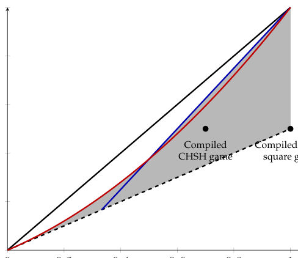
<figcaption class="paper-figure-caption"><b>Fig 1.</b> Figure 1: Visualization of the parameter regimes captured by Theorem 1.1 and Theorem 1.2. The solid black line is 𝛿= 𝜖, and the dashed black line is 𝛿= 𝜖/2, so the region between is the region of parameters where (normal form) ToNC plausibly exists. The dark gray shade denotes the sub- region where we show that ToNC implies KA or OT (additionally assuming one-way functions for the latter). The blue curve is the key agreement threshold 𝛿= (5𝜖−1)/4, and the red curve is the oblivious transfer threshold 𝛿= (𝜖2 + 𝜖)/2. It remains open to show that ToNC in the white region below the solid black line implies KA or OT. However, we note that ToNC with robust completeness and any 𝜖/2 ≤𝛿&lt; 𝜖implies...</figcaption>
</figure>
</div>

<p><strong>Summary.</strong> This paper rigorously connects the physical concept of testing for non-commuting observables on qubits to foundational cryptographic primitives like Key Agreement and Oblivious Transfer. By formalizing this Test of Non-Commutation (ToNC), the authors prove that satisfying quantum anti-commutation tests implies strong computational security guarantees, while also developing advanced post-quantum amplification tools for these protocols.</p>
<p><strong>Why it may be interesting.</strong> For a theoretical physicist working on quantum information, this work provides deep connections between fundamental physical requirements (like anti-commutation in qubit verification) and the mathematical structure of modern cryptography. It suggests that verifying basic quantum properties might be as hard as achieving secure key exchange.</p>
<details>
<summary>Detailed structure</summary>
<p><strong>Main problem.</strong> The work aims to characterize the cryptographic structure required for verifying quantum computational processes, specifically by relating qubit tests to established primitives like Key Agreement (KA) and Oblivious Transfer (OT). It seeks to establish strong cryptography from classical tests of anti-commutation.</p>
<p><strong>Main result.</strong> The authors prove that a Test of Non-Commutation (ToNC) implies classical-communication Key Agreement (KA), and ToNC combined with one-way functions implies Oblivious Transfer (OT). They also develop post-quantum amplification theorems for KA and OT.</p>
<p><strong>Method.</strong> The methodology involves developing formal definitions for interactive quantum protocols (like $(\epsilon, \delta)$-ToNC) and using advanced cryptographic techniques such as hybrid arguments and sequential repetition to derive implications between these primitives.</p>
<p><strong>Model / system.</strong> The primary model is the abstract concept of a qubit test, formalized as an interactive protocol involving two binary observables ($P_0, P_1$) that must anti-commute. The analysis focuses on the security parameters ($\epsilon, \delta$) governing the success and failure gaps of these protocols.</p>
<p><strong>Key observables.</strong> The key observables are the advantage parameters $\epsilon$ (completeness/correctness) and $\delta$ (soundness/security gap) associated with the ToNC protocol. Other observables include quantum prediction advantages ($\gamma$).</p>
<p><strong>Important parameters / regimes.</strong> Critical parameter regimes include thresholds like $\delta < 5\epsilon^{-1}/4$ for KA implication, and the general security parameters $(\epsilon, \delta)$ that define the strength of the underlying protocols.</p>
<p><strong>Assumptions / limitations.</strong> The results rely on assumptions such as the existence of one-way functions (for OT) and the ability to perform post-quantum hardness amplification techniques, which are themselves based on established cryptographic theorems.</p>
<p><strong>Figures summary.</strong> Figure 1 visually summarizes the parameter regimes showing the thresholds ($\delta$ vs. $\epsilon$) under which ToNC implies KA or OT.</p>
<p><strong>Paper structure.</strong> The paper progresses by first defining the core primitive (ToNC), then establishing implications to classical cryptography (KA, OT) using specific parameter bounds, and finally developing advanced post-quantum amplification theorems for these cryptographic primitives.</p>
</details>
<details>
<summary>Abstract</summary>
<p>Classically testing for the presence of anti-commuting operators on a quantum device is a critical tool underpinning recent progress in classical verification of quantum computation. While such tests can be based on cryptographic assumptions, known constructions rely on highly structured assumptions, e.g. trapdoor claw-free functions.   In this work, we seek to explain this state of affairs by constructing strong cryptography from (certain forms of) classical tests of anti-commutation. In particular, we formulate the notion of a test of non-commutation (ToNC), an interactive protocol between a quantum prover and classical verifier in which the prover's final-round response is obtained by measuring one of two binary observables $P_0,P_1$ depending on the verifier's challenge bit $c$. We prove that, for a broad range of parameters, ToNC implies classical-communication key agreement (KA), and ToNC combined with one-way functions implies oblivious transfer (OT).   Along the way, we develop tools for and provide the first known results on hardness amplification for post-quantum KA and OT, where communication is classical but adversaries may be quantum. In particular, we prove the following results of independent interest.   - Post-quantum hard-core measure theorem: For any efficiently sampleable high-min-entropy distribution $D$ over pairs $(x,b)$ such that quantum circuits have advantage at most $δ$ in predicting $b$ from $x$, there exists a sub-distribution $M\preceq D$ of density $(1-δ)$ on which $b$ is nearly optimally quantum-hard to predict.   - Post-quantum interactive XOR lemma: Given any classically-interactive protocol, if quantum adversaries have advantage at most $δ$ in guessing a private challenger bit $b$, then two sequential repetitions reduce the advantage for predicting the XOR of the challenger bits $b_1\oplus b_2$ to at most $δ^2+\rm{negl}(λ)$.</p>
</details>
<p><sub><a href="#top">↑ back to top</a></sub></p>

<p><a id="paper-2606.06017"></a></p>
<h3 id="superconductivity-beyond-band-geometry-emergence-of-pair-quantum-geometry"><a href="http://arxiv.org/abs/2606.06017v1">Superconductivity beyond band geometry: emergence of pair quantum geometry</a></h3>
<p><strong>Authors:</strong> Mehmet Akif Keskiner, Menderes Işkın<br>
<strong>Type:</strong> theory · <strong>Category:</strong> strongly correlated electrons · <strong>PDF:</strong> <a href="https://arxiv.org/pdf/2606.06017v1">https://arxiv.org/pdf/2606.06017v1</a><br>
<strong>Analysis basis:</strong> full PDF text, analyzed in chunks
<strong>Topic relevance:</strong> <code>analog quantum simulation</code> <strong>2/5</strong> · <code>Keldysh / 2PI / non-Gaussian methods</code> <strong>1/5</strong></p>
<div class="figure-strip-hint">↔ Scroll figures horizontally</div>
<div class="paper-figures-scroll">
<figure class="paper-figure-card">
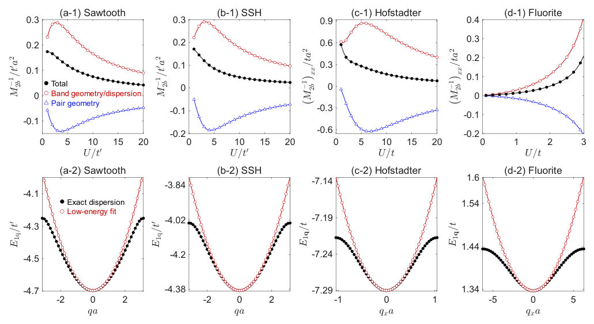
<figcaption class="paper-figure-caption"><b>Fig 1.</b> FIG. 1. Top panels: “Conventional” (band-dispersion and band-geometry) contribution (red open circles) and pair-geometry contribution (blue open triangles) from Eq. (4), together with their sum (black filled circles), as a function of interaction strength. Bottom panels: Exact bound-state dispersions (black filled circles) compared with the quadratic expansion from Eq. (4) (red open circles), showing excellent agreement in the small-q regime for representative parameters: U = 3t′ (sawtooth and SSH models), U = 5t (Hofstadter lattice), and U = t (fluorite lattice).</figcaption>
</figure>
</div>

<p><strong>Summary.</strong> This work develops a rigorous framework to quantify 'pair quantum geometry,' extending the concept of quantum geometry from single electrons to Cooper pairs in superconductors. By analyzing the effective mass tensor derived from Hubbard models on various lattices, the authors show that this geometric term provides a fundamental correction to superconductivity's properties beyond simple band theory. This advances our understanding of pairing physics by incorporating underlying lattice topology into superconducting phenomenology.</p>
<p><strong>Why it may be interesting.</strong> The explicit derivation of a geometric contribution to superconductivity's effective mass provides a novel, purely theoretical lens through which to view pairing mechanisms beyond standard BCS theory, connecting topology/geometry directly to macroscopic superconducting properties.</p>
<details>
<summary>Detailed structure</summary>
<p><strong>Main problem.</strong> The research extends the concept of quantum geometry from single-particle Bloch states to two-body bound states and Cooper pairs in superconductors.</p>
<p><strong>Main result.</strong> It establishes 'pair quantum geometry' as a fundamental, quantifiable contribution to the effective mass of superconducting pairs, distinct from conventional band structure effects.</p>
<p><strong>Method.</strong> The authors derive exact effective-mass theorems by analyzing the secular equation governing two-body bound states and Cooper pair fluctuations using functional integrals and spectral decomposition techniques.</p>
<p><strong>Model / system.</strong> The primary model is the multiband Hubbard Hamiltonian applied to various lattices (1D, 2D, 3D), allowing for analysis across different superconducting regimes (BCS vs. BEC).</p>
<p><strong>Key observables.</strong> Inverse effective mass tensor ($M^{-1}$), pair quantum metric, complex Cooper-pair effective mass (whose imaginary part reflects Landau damping).</p>
<p><strong>Important parameters / regimes.</strong> Interaction strength ($U$), temperature relative to $T_c$, and lattice geometry (e.g., sawtooth, fluorite-like).</p>
<p><strong>Assumptions / limitations.</strong> The analysis relies on assuming nondegenerate extrema for long-wavelength dispersion and using analytic continuation in the many-body setting.</p>
<p><strong>Figures summary.</strong> Figures illustrate the decomposition of the inverse effective mass into conventional and pair-geometry contributions across varying interaction strengths, alongside comparisons to exact bound-state dispersions.</p>
<p><strong>Paper structure.</strong> The paper progresses by first establishing single-particle geometry via quantum metrics, then extending this formalism to two-body bound states (two-body problem), and finally generalizing it to the many-body Cooper pair fluctuation propagator in the superconducting state.</p>
</details>
<details>
<summary>Abstract</summary>
<p>Quantum geometry shapes the effective mass of Bloch particles through the geometric properties of single-particle states. Here we show that this principle extends to paired states. Starting from a generic multiband Hubbard model, we derive an exact effective-mass theorem for two-body bound states and its many-body counterpart for Cooper pairs near the critical temperature within Gaussian fluctuation theory. In both cases, the inverse effective mass separates into a ``conventional'' band-structure contribution and a new geometric contribution, pair quantum geometry, governed by quantum metrics on the pairing manifold, which becomes nontrivial when pairing is non-uniform across sublattices. In the many-body setting, analytic continuation renders the fluctuation kernel non-Hermitian, producing a biorthogonal pair geometry and a generally complex Cooper-pair effective mass whose imaginary part reflects Landau damping. Exact calculations on one-, two-, and three-dimensional lattice models show that pair quantum geometry can make quantitatively significant contributions to the effective mass. These results establish pair quantum geometry as a fundamental ingredient of superconductivity beyond conventional band geometry.</p>
</details>
<p><sub><a href="#top">↑ back to top</a></sub></p>

<p><a id="paper-2606.06062"></a></p>
<h3 id="barbell-codes-qldpc-codes-for-superconducting-quantum-hardware"><a href="http://arxiv.org/abs/2606.06062v1">Barbell Codes: qLDPC Codes for Superconducting Quantum Hardware</a></h3>
<p><strong>Authors:</strong> Shin Ho Choe, Vincent Steffan, Florian Vigneau, Pedro Parrado-Rodríguez, Hsiang-Sheng Ku, Martin Leib, Francisco Revson Fernandes Pereira, Fedor Šimkovic<br>
<strong>Type:</strong> theory · <strong>Category:</strong> quantum information and computing · <strong>PDF:</strong> <a href="https://arxiv.org/pdf/2606.06062v1">https://arxiv.org/pdf/2606.06062v1</a><br>
<strong>Analysis basis:</strong> full PDF text, analyzed in chunks
<strong>Topic relevance:</strong> <code>QC/QI experiment</code> <strong>2/5</strong></p>
<div class="figure-strip-hint">↔ Scroll figures horizontally</div>
<div class="paper-figures-scroll">
<figure class="paper-figure-card">
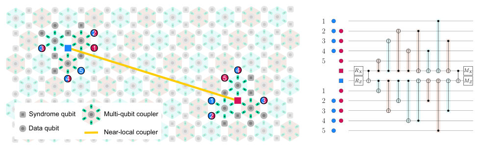
<figcaption class="paper-figure-caption"><b>Fig 1.</b> Figure 1: In (a), we give a snapshot of the chip layout for the Barbell architecture. Grey elements are qubits: Square-shaped ones indicate syndrome qubits, circle-shaped ones inside the blue and red hexagons are central elements, and the remaining ones are data qubits. In this way, two-qubit interactions between syndrome and data qubits are realized via central elements. We highlight a pair of X- and Z- syndrome qubits together with their supports in red, resp. blue. The two syndrome qubits are connected using a near-local coupler. In (b), we depict a possible depth-12 syndrome extraction circuit for the pair of X- and Z- stabilizers using superdense syndrome extraction. Using central...</figcaption>
</figure>
<figure class="paper-figure-card">
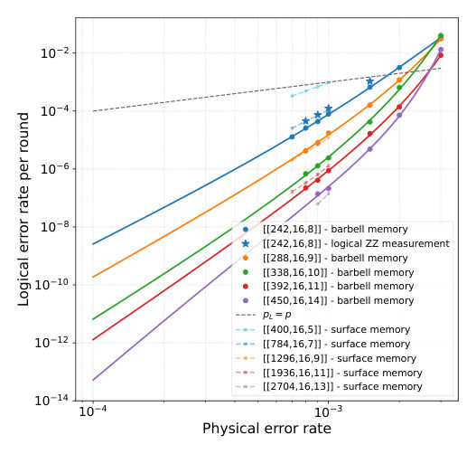
<figcaption class="paper-figure-caption"><b>Fig 2.</b> Figure 2: Performance of a family of barbell codes under uniform circuit-level noise. All codes belong to the same family, more precisely, are barbell codes of different sizes constructed from the barbell shown in Figure 1 (a). In (a), we show performance curves for barbell codes under circuit-level noise for memory experiments (circles), logical measurement (stars), and, as a comparison, 16 patches of surface code (squares). All logical error rates are plotted per round, and estimated from simulating d rounds with at least 100 failures sampled. In (b), we highlight some of the logical error rates for p = 0.0009 and p = 0.001. Here, the first column specifies the experiment type (M for...</figcaption>
</figure>
<figure class="paper-figure-card">
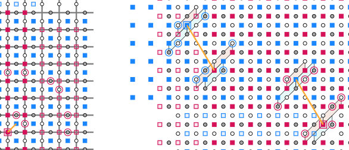
<figcaption class="paper-figure-caption"><b>Fig 3.</b> Figure 5: In (a), we show a tile code with an X- and a Z-type stabilizer highlighted. For all boundary stabilizers, we added dummy stabilizer qubits. In (b), we show a version of this tile code in which qubits, as well as X- and Z-type checks, are moved in space. In this way, the support of both the X- and the Z-type stabilizers is contained in the ‘barbell’ formed by the neighbors of a pair of X- and Z-checks in the six-qubit star lattice layout. We mention that this is the [[242, 16, 8]] code for which we run circuit-level noise simulations in the Main Text.</figcaption>
</figure>
<figure class="paper-figure-card">
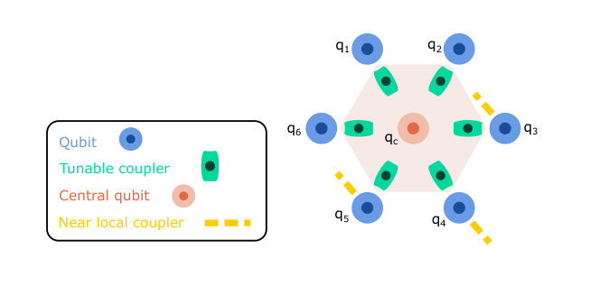
<figcaption class="paper-figure-caption"><b>Fig 4.</b> Figure 6: Unit cell of six-qubit star lattice plus near-local coupler (6QSL+NLC) architecture. Six qubits are connected via tunable couplers to a central element in a star topology. The pink hexagon highlights the multi-qubit coupler formed by the six tunable couplers and the central element. The extremities of near-local couplers are drawn for three qubits (the syndrome qubits of the barbell code).</figcaption>
</figure>
<figure class="paper-figure-card">
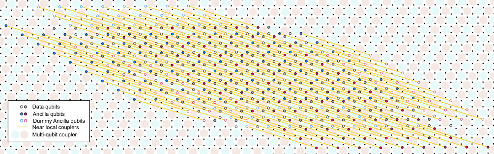
<figcaption class="paper-figure-caption"><b>Fig 5.</b> Figure 7: Illustration of the weight-8 barbell code of distance 8 (Fig. 5) in six-qubit star lattice plus near- local coupler architecture (6QSL+NLC). For simplicity, the central elements and tunable coupler are only represented in the form of multi-qubit couplers.</figcaption>
</figure>
</div>

<p><strong>Summary.</strong> This paper proposes 'barbell codes,' a novel family of qLDPC codes designed specifically for superconducting quantum chips. It solves the major scaling hurdle in QEC by maintaining constant hardware complexity as code distance grows. Through detailed circuit analysis and simulation, it proves that these codes can achieve fault tolerance with significantly lower qubit overhead than established methods.</p>
<p><strong>Why it may be interesting.</strong> The detailed analysis of stabilizer evolution ($L_X \in S'$, $L_Z \in S'$) provides rigorous mathematical proof that the proposed hardware structure can support fault-tolerant logical operations, which is crucial for any theoretical physicist designing quantum computation protocols.</p>
<details>
<summary>Detailed structure</summary>
<p><strong>Main problem.</strong> The core challenge is implementing efficient Quantum Error Correction (QEC) codes, specifically qLDPC codes, on fixed-connectivity superconducting quantum chips without increasing hardware complexity for non-local interactions.</p>
<p><strong>Main result.</strong> The authors introduce 'barbell' qLDPC codes, demonstrating that they maintain constant hardware complexity as code distance increases and achieve fault tolerance at physical noise strengths of $10^{-4}$ over trillions of cycles.</p>
<p><strong>Method.</strong> The work involves constructing the barbell code structure based on tile codes, detailing a superdense syndrome extraction cycle using native two-qubit interactions, and simulating performance under circuit-level noise.</p>
<p><strong>Model / system.</strong> The physical platform is superconducting qubits utilizing a Barbell architecture built upon a hexagonal tiling (6QSL+NLC). The mathematical model is the qLDPC code, specifically the barbell family, which offers low overhead compared to surface codes.</p>
<p><strong>Key observables.</strong> Logical Error Rate (LER) per QEC round; Hardware Complexity ($ ext{Chw}$); Logical Pauli measurement fidelity.</p>
<p><strong>Important parameters / regimes.</strong> Physical noise strength ($p \approx 10^{-4}$); Code distance ($d$ up to 14); Overhead ($<30$ data qubits per logical qubit).</p>
<p><strong>Assumptions / limitations.</strong> The analysis assumes the ability to perform joint Pauli measurements and relies on the specific connectivity provided by the Barbell architecture for syndrome extraction.</p>
<p><strong>Figures summary.</strong> Figures illustrate the chip layout (Barbell architecture), compare LER vs. distance against surface codes, and detail the construction steps of tile/barbell codes using lattice surgery concepts.</p>
<p><strong>Paper structure.</strong> The paper progresses from defining the need for QEC on fixed-connectivity hardware to introducing the barbell code structure via tile code principles. It then details the syndrome extraction cycle circuit, proves that logical operators are preserved through this cycle (Theorem 1), and finally simulates performance metrics like LER and $ ext{Chw}$ to validate feasibility.</p>
</details>
<details>
<summary>Abstract</summary>
<p>The major challenge on the way to fault-tolerant quantum computing comes from the insufficient quality of hardware components and the difficulty of scaling their number without further compromising fidelity. Quantum Low-Density Parity-Check (qLDPC) codes offer a promising solution by encoding logical qubits with low overhead and at a comparatively high code distance. However, it remains an open question how to scalably implement efficient qLDPC codes on fixed-connectivity quantum chips without increasing hardware complexity to enable the non-local interactions in their underlying QEC cycles. We resolve this challenge for the first time by introducing a family of qLDPC "barbell" codes accompanied by a realistic chip layout that natively supports all required two-qubit interactions. Crucially, the hardware complexity required to implement barbell codes remains constant as code distance increases. We provide a detailed investigation into the feasibility of all required hardware components and simulate a specific family of barbell codes against circuit-level noise. We find that, with a modest overhead of $<30$ data qubits per logical qubit, barbell codes can preserve information at a physical noise strength of $10^{-4}$ for several trillion QEC cycles. Simulations of logical multi-Pauli measurements, performed with circuits tailored to the chip, yield similar logical performance per QEC round, indicating that entangling gates between logical qubits in barbell codes can be realized fault-tolerantly.</p>
</details>
<p><sub><a href="#top">↑ back to top</a></sub></p>

<p><a id="paper-2606.05412"></a></p>
<h3 id="unlocking-exponential-and-unbounded-robust-gains-in-shannon-capacity-of-classical-multiple-access-channels-with-causal-csit-via-quantum-entanglement-assistance"><a href="http://arxiv.org/abs/2606.05412v1">Unlocking Exponential and Unbounded Robust Gains in Shannon Capacity of Classical Multiple Access Channels with Causal CSIT via Quantum Entanglement Assistance</a></h3>
<p><strong>Authors:</strong> Yuhang Yao, Syed A. Jafar<br>
<strong>Type:</strong> theory · <strong>Category:</strong> quantum information and computing · <strong>PDF:</strong> <a href="https://arxiv.org/pdf/2606.05412v1">https://arxiv.org/pdf/2606.05412v1</a><br>
<strong>Analysis basis:</strong> full PDF text, analyzed in chunks
<strong>Topic relevance:</strong> <code>entanglement &amp; information structure</code> <strong>2/5</strong></p>
<div class="figure-strip-hint">↔ Scroll figures horizontally</div>
<div class="paper-figures-scroll">
<figure class="paper-figure-card">
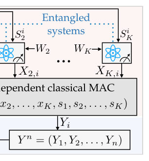
<figcaption class="paper-figure-caption"><b>Fig 1.</b> Figure 1: Transmitter-side quantum entanglement-assisted classical MAC with causal CSIT.</figcaption>
</figure>
<figure class="paper-figure-card">
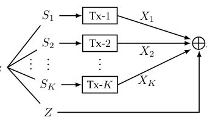
<figcaption class="paper-figure-caption"><b>Fig 2.</b> Figure 2: Additive MAC with state-dependent interference. Tx-k denotes the kth transmitter. PS1···SKZ denotes the distribution of (S1, . . . , SK, Z).</figcaption>
</figure>
<figure class="paper-figure-card">
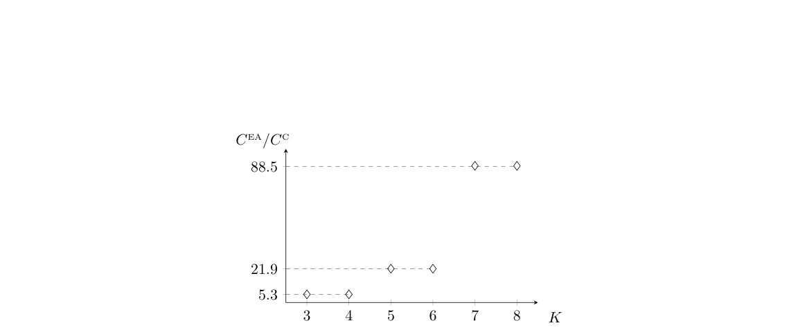
<figcaption class="paper-figure-caption"><b>Fig 3.</b> Figure 4: The ratio of entanglement-assisted capacity to classical capacity, CEA/CC is illustrated for Channel B1, versus the number of users K.</figcaption>
</figure>
</div>

<p><strong>Summary.</strong> The paper proves that for certain complex Multiple Access Channels with state information and causal CSIT, using quantum entanglement assistance leads to capacity gains that grow exponentially or are unbounded compared to purely classical schemes. This demonstrates a significant advantage of quantum resources in enhancing communication throughput beyond what is classically possible.</p>
<p><strong>Why it may be interesting.</strong> This work provides a strong theoretical demonstration of how quantum resources can fundamentally alter the achievable communication rates in classical multi-user systems, offering insights into the limits of classical vs. quantum information processing in wireless channels.</p>
<details>
<summary>Detailed structure</summary>
<p><strong>Main problem.</strong> The work investigates whether quantum entanglement assistance can provide large (exponential or unbounded) multiplicative gains in the Shannon capacity of classical Multiple Access Channels (MACs). It specifically addresses this when causal Channel State Information at the Transmitters (CSIT) is available.</p>
<p><strong>Main result.</strong> Quantum entanglement assistance provides a multiplicative capacity advantage that grows exponentially with the number of users K, and can be unbounded as the state alphabet size increases. These gains are robust even against significant quantum noise.</p>
<p><strong>Method.</strong> The analysis uses information-theoretic techniques, relating MAC capacity to optimal winning probabilities in associated XOR games. Achievability and converse bounds are established using direct coding theorems and entropy calculations.</p>
<p><strong>Model / system.</strong> The model is a classical K-user Multiple Access Channel (MAC) with state-dependent interference, often analyzed via an additive structure involving XOR operations over binary or larger alphabets. The assistance mechanism involves providing quantum entanglement only to the transmitters.</p>
<p><strong>Key observables.</strong> Multiplicative capacity gain factor ($ ext{CEA}/   ext{CC}$), achievable rates ($R_k$), and error probabilities ($P_e$).</p>
<p><strong>Important parameters / regimes.</strong> Number of users (K), size of alphabet (m or $r$), degree of noise/depolarization ($\gamma$), and the availability of causal CSIT.</p>
<p><strong>Assumptions / limitations.</strong> The gains are based on entanglement assistance provided <em>only</em> to the transmitters. The analysis assumes specific channel structures, such as additive MACs with state-dependent interference.</p>
<p><strong>Figures summary.</strong> Figures illustrate the setup (Transmitter-side quantum entanglement-assisted classical MAC) and plot the multiplicative capacity gains ($  ext{CEA}/   ext{CC}$) for varying numbers of users K across different channel classes.</p>
<p><strong>Paper structure.</strong> The paper builds by first establishing the theoretical framework using XOR games to relate classical and EA capacities. It then applies this framework to specific, complex MAC models (e.g., state-dependent interference) to derive concrete bounds on exponential and unbounded capacity gains, concluding with robustness checks against noise.</p>
</details>
<details>
<summary>Abstract</summary>
<p>Quantum entanglement assistance is known to improve the Shannon capacity of classical communication networks but the largest gains noted thus far are rather modest (less than 6%), motivating the question: are large capacity gains ever possible? It is shown in this work that in the presence of causal channel state information at the transmitters, quantum entanglement assistance provides a multiplicative capacity advantage that grows exponentially with the number of users K for certain classical K-user multiple access channels with fixed size (binary) alphabet for inputs, outputs and states. Similarly, in the presence of causal channel state information at the transmitters, quantum entanglement assistance is shown to provide a multiplicative capacity advantage that is unbounded as the size of the state alphabet grows, while the number of users (K=3) and the input and output alphabet (binary) are held fixed. Even with only a few users and small alphabet sizes, substantial multiplicative gains in capacity are found, e.g., with binary inputs, outputs and states, multiplicative gains by factors exceeding 21 and 88 are noted with K=5 and K=7 users, respectively. The gains are robust in the sense that they persist even with noisy quantum resources, e.g., an exponential (in K) capacity advantage from quantum entanglement assistance remains available even if each entangled qubit independently depolarizes completely with probability $\approx$ 30%. The gains are based on quantum entanglement assistance provided only to the transmitters.</p>
</details>
<p><sub><a href="#top">↑ back to top</a></sub></p>

<p><a id="paper-2606.06343"></a></p>
<h3 id="math591math-type-lieb-schultz-mattis-anomalies-deconfined-quantum-critical-points-and-non-invertible-symmetry-breaking"><a href="http://arxiv.org/abs/2606.06343v1">$E_\infty^{1,2}$-type Lieb-Schultz-Mattis anomalies, deconfined quantum critical points, and non-invertible symmetry breaking</a></h3>
<p><strong>Authors:</strong> Hao-Ran Zhang, Hanlin Lin, Shuo Yang, Qing-Rui Wang<br>
<strong>Type:</strong> theory · <strong>Category:</strong> strongly correlated electrons · <strong>PDF:</strong> <a href="https://arxiv.org/pdf/2606.06343v1">https://arxiv.org/pdf/2606.06343v1</a><br>
<strong>Analysis basis:</strong> full PDF text, analyzed in chunks
<strong>Topic relevance:</strong> <code>Keldysh / 2PI / non-Gaussian methods</code> <strong>1/5</strong> · <code>analog quantum simulation</code> <strong>1/5</strong> · <code>driven-dissipative phase transition</code> <strong>1/5</strong> · <code>exotic spin models in light-matter</code> <strong>1/5</strong></p>
<div class="figure-strip-hint">↔ Scroll figures horizontally</div>
<div class="paper-figures-scroll">
<figure class="paper-figure-card">
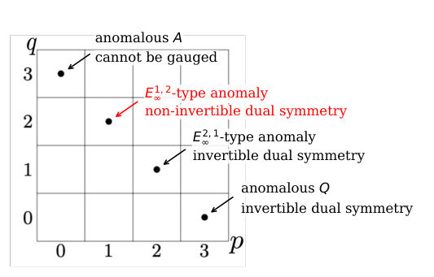
<figcaption class="paper-figure-caption"><b>Fig 1.</b> FIG. 1: Effect of LHS anomaly components under gauging an Abelian normal subgroup A of G. The key result is that a nontrivial E1,2 ∞component produces projective A-sectors and hence a non-invertible dual symmetry, whereas E3,0 ∞and E2,1 ∞data keep the dual symmetry invertible.</figcaption>
</figure>
<figure class="paper-figure-card">
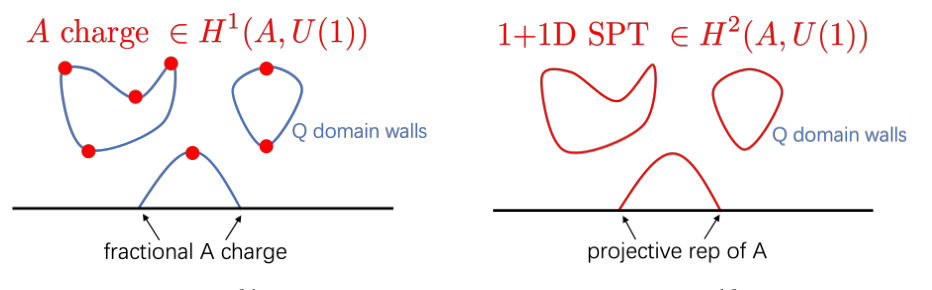
<figcaption class="paper-figure-caption"><b>Fig 2.</b> FIG. 2: Decorated-domain-wall representatives for a 2+1D bulk SPT with 1 →A →G →Q →1. Left: an E2,1 ∞ decoration puts A charges on Q-wall junctions, so gauging A keeps the dual symmetry invertible. Right: an E1,2 ∞ decoration puts a 1+1D A-SPT on each Q wall; its boundary endpoint carries a projective A representation, which becomes a non-invertible dual defect after gauging A.</figcaption>
</figure>
<figure class="paper-figure-card">
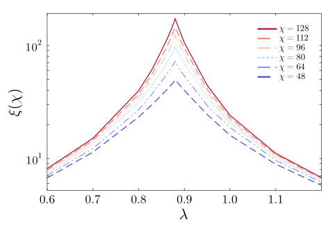
<figcaption class="paper-figure-caption"><b>Fig 3.</b> FIG. 3: The peak of the MPS correlation length ξ(χ) grows with increasing bond dimension χ, indicating a continuous transition between the dimer phase near λ = 0 and the zFM phase at large positive λ. As shown in Fig. 4, the peak height follows a power-law scaling with χ.</figcaption>
</figure>
<figure class="paper-figure-card">
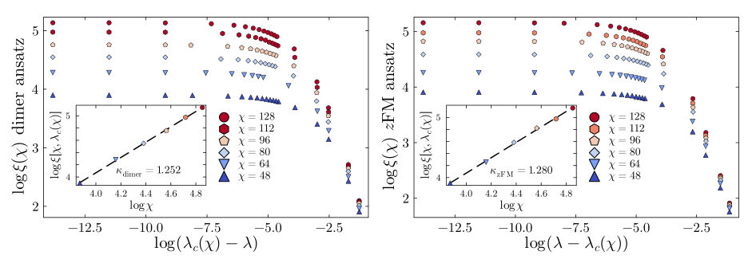
<figcaption class="paper-figure-caption"><b>Fig 4.</b> FIG. 4: The MPS correlation length ξ(χ) exhibits power-law scaling with χ in the critical regime. In the insets, the peak value ξ[χ, λc(χ)] is plotted as a function of χ, from which the finite-entanglement exponent κ is extracted. The estimate from the dimer ansatz is shown in the left panel, while that from the zFM ansatz is shown in the right panel.</figcaption>
</figure>
<figure class="paper-figure-card">
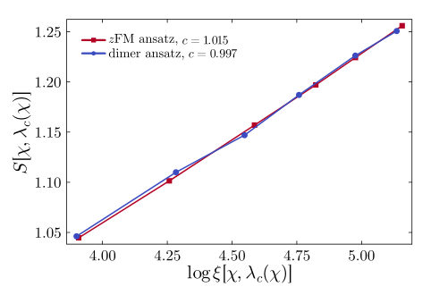
<figcaption class="paper-figure-caption"><b>Fig 5.</b> FIG. 5: The MPS entanglement entropy S(χ) is plotted as a function of the logarithm of the MPS correlation length ξ(χ) at the pseudocritical points λc(χ). The linear dependence is consistent with entropy scaling S(χ) ∼c</figcaption>
</figure>
</div>

<p><strong>Summary.</strong> The paper establishes a general mechanism showing that specific types of Lieb-Schultz-Mattis anomalies ($E_{1,2}^{\infty}$) dictate that the resulting deconfined quantum critical points must be dual to the spontaneous breaking of a non-invertible symmetry. This is demonstrated using 1D spin chains and provides a powerful mathematical tool for classifying exotic quantum phase transitions.</p>
<p><strong>Why it may be interesting.</strong> This work provides a deep mathematical framework connecting fundamental symmetry constraints (LSM) to the nature of quantum critical points via advanced concepts like non-invertible symmetries, which are crucial for understanding exotic topological phases in condensed matter systems.</p>
<details>
<summary>Detailed structure</summary>
<p><strong>Main problem.</strong> The study characterizes Deconfined Quantum Critical Points (DQCPs) associated with Lieb-Schultz-Mattis (LSM) anomalies in 1D spin chains, focusing on the implications of an $E_\infty^{1,2}$-type anomaly.</p>
<p><strong>Main result.</strong> An $E_{1,2}^{\infty}$-type LSM anomaly necessarily leads to a non-invertible dual symmetry upon gauging the internal symmetry, defining 'type-II' DQCPs distinct from type-I transitions.</p>
<p><strong>Method.</strong> The analysis uses advanced mathematical tools, including the Lyndon-Hochschild-Serre spectral sequence and category theory, to structurally characterize anomalies and gauge symmetries.</p>
<p><strong>Model / system.</strong> The primary system is one-dimensional spin chains. A specific example analyzed is a dimer-to-ferromagnet DQCP candidate using a spin-1/2 chain with an anomalous $D_8$ LSM symmetry.</p>
<p><strong>Key observables.</strong> The type of anomaly ($E_{1,2}^{\infty}$ vs $E_{2,1}^{\infty}$) and the nature of the dual symmetry (invertible group symmetry vs non-invertible fusion-category symmetry).</p>
<p><strong>Important parameters / regimes.</strong> Central charge $c \approx 1$; the structure of the internal symmetry group ($D_8$); and the anomaly class $\omega_{LSM} \in E_\infty^{1,2}$.</p>
<p><strong>Assumptions / limitations.</strong> The analysis relies on structural characterizations within the LHS spectral sequence framework and assumes Abelian normal subgroups for certain categorical simplifications.</p>
<p><strong>Figures summary.</strong> Figure 1 summarizes that a nontrivial $E_{1,2}^{\infty}$ component causes non-invertibility in the dual symmetry. Figure 2 illustrates how $E_{1,2}^{\infty}$ leads to an A-SPT decorating the wall, resulting in a non-invertible dual defect.</p>
<p><strong>Paper structure.</strong> The paper proceeds by mathematically characterizing the LSM anomaly using the LHS spectral sequence, establishing the general link between $E_{1,2}^{\infty}$-anomalies and non-invertible symmetries, and then illustrating this mechanism with explicit lattice constructions and numerical evidence for a specific DQCP candidate.</p>
</details>
<details>
<summary>Abstract</summary>
<p>We study deconfined quantum critical points (DQCP) associated with Lieb-Schultz-Mattis (LSM) anomalies in one-dimensional spin chains. Our starting point is a structural characterization of the LSM anomaly in the Lyndon-Hochschild-Serre spectral sequence: $ω_{\mathrm{LSM}}\in E_\infty^{1,2}= H^1(\mathbb Z_{\mathrm{trans}},H^2(G_{\mathrm{int}},\mathrm{U}(1)))\subseteq H^3(G_{\mathrm{int}}\rtimes_ρ\mathbb Z_{\mathrm{trans}},\mathrm{U}(1))$. Physically, this class decorates a translation defect with a projective representation of the internal symmetry $G_\mathrm{int}$. We show that gauging the internal symmetry in the presence of an $E_\infty^{1,2}$-type anomaly necessarily produces a non-invertible dual symmetry. This gives a general mechanism for type-II DQCP: in contrast to type-I examples with $E_\infty^{2,1}$-type anomalies which are dual to ordinary group-like symmetry breaking, type-II transitions are dual to spontaneous breaking of a non-invertible symmetry. We illustrate the mechanism using a spin-$1/2$ chain with an anomalous $D_8$ LSM symmetry. We construct a dimer-to-ferromagnet DQCP candidate, provide numerical evidence for a critical theory with central charge $c\approx 1$, and show, using both category theory and explicit lattice constructions, that gauging the internal symmetry yields the non-invertible $\mathrm{Rep}(H_8)$ dual symmetry.</p>
</details>
<p><sub><a href="#top">↑ back to top</a></sub></p>

<p><a id="paper-2606.05653"></a></p>
<h3 id="bcs-bec-crossover-driven-by-small-fermi-pockets-of-a-high-tc-cuprate-superconductor"><a href="http://arxiv.org/abs/2606.05653v1">BCS-BEC crossover driven by small Fermi pockets of a high-Tc cuprate superconductor</a></h3>
<p><strong>Authors:</strong> Junhyeok Jeong, Yamato Enomoto, Yoshimitsu Kohama, Tomotaka Nakayama, Kotaro Ando, Kifu Kurokawa, Soonsang Huh, Zhuo Yang, Toshihiro Nomura, Matthew D. Watson, Timur K. Kim, Cephise Cacho, Chun Lin, Makoto Hashimoto, Donghui Lu, Shiro Sakai, Takami Tohyama, Kazuyasu Tokiwa, Takeshi Kondo<br>
<strong>Type:</strong> experiment · <strong>Category:</strong> strongly correlated electrons · <strong>PDF:</strong> <a href="https://arxiv.org/pdf/2606.05653v1">https://arxiv.org/pdf/2606.05653v1</a><br>
<strong>Analysis basis:</strong> full PDF text, analyzed in chunks
<strong>Topic relevance:</strong> <code>Keldysh / 2PI / non-Gaussian methods</code> <strong>1/5</strong> · <code>Kondo &amp; dissipative impurity</code> <strong>1/5</strong></p>
<div class="figure-strip-hint">↔ Scroll figures horizontally</div>
<div class="paper-figures-scroll">
<figure class="paper-figure-card">
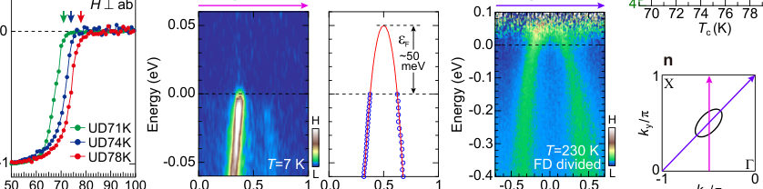
<figcaption class="paper-figure-caption"><b>Fig 1.</b> FIG. 1. A small Fermi pocket observed by ARPES and quantum oscillation mea-</figcaption>
</figure>
<figure class="paper-figure-card">
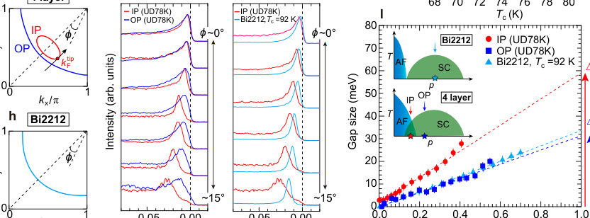
<figcaption class="paper-figure-caption"><b>Fig 2.</b> FIG. 2. Superconducting gap and pairing strength of the pocket bands. a, ARPES band</figcaption>
</figure>
<figure class="paper-figure-card">
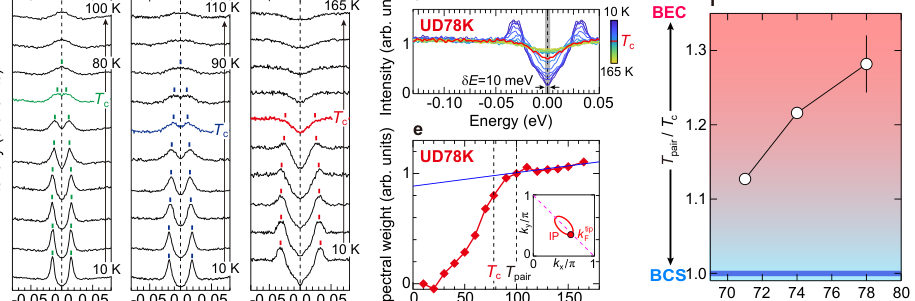
<figcaption class="paper-figure-caption"><b>Fig 3.</b> FIG. 3. Pairing pseudogap in the pocket and its evolution with carrier doping a-c,</figcaption>
</figure>
<figure class="paper-figure-card">
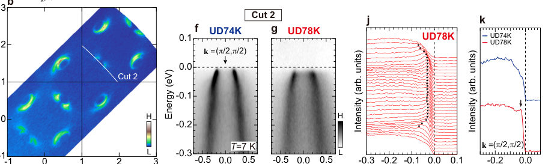
<figcaption class="paper-figure-caption"><b>Fig 4.</b> FIG. 4. Bogoliubov flat band in the pocket. a,b, ARPES FS maps of UD71K measured with</figcaption>
</figure>
<figure class="paper-figure-card">
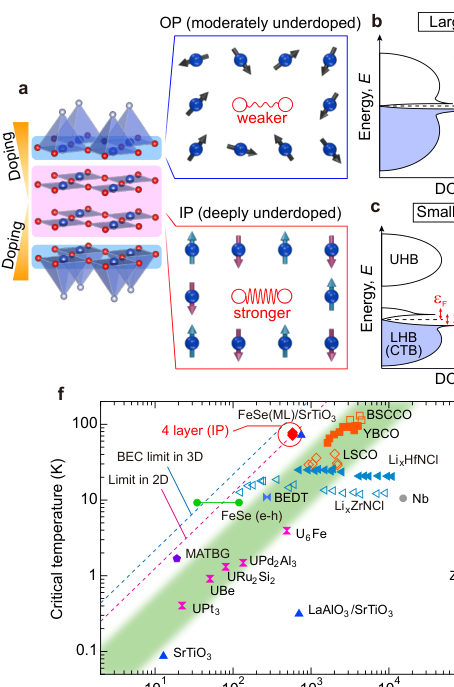
<figcaption class="paper-figure-caption"><b>Fig 5.</b> FIG. 5.</figcaption>
</figure>
</div>

<p><strong>Summary.</strong> The study uses ARPES and quantum oscillations on cuprate superconductors to investigate the BCS-BEC crossover. By focusing on small Fermi pockets within the inner $   ext{CuO}_2$ layers, the authors demonstrate a large superconducting gap indicative of strong coupling. This work provides crucial evidence for the pairing mechanism in high-$T_c$ materials by showing that the pocket state dictates superconductivity.</p>
<p><strong>Why it may be interesting.</strong> This work provides direct spectroscopic evidence of strong coupling physics in a highly correlated material, linking macroscopic superconducting properties ($T_c$) to microscopic electronic features (small pockets) near theoretical limits.</p>
<details>
<summary>Detailed structure</summary>
<p><strong>Main problem.</strong> The study aims to resolve the ambiguity regarding Fermi arcs in cuprates—whether they represent large Fermi surface segments or small Fermi pockets—and to establish a microscopic foundation for the BCS-BEC crossover mechanism.</p>
<p><strong>Main result.</strong> The authors demonstrated the coexistence of a small Fermi pocket and a large superconducting gap, providing evidence for the BCS-BEC crossover. Crucially, this crossover emerges upon <em>increasing</em> carrier density in the inner $ ext{CuO}_2$ layers.</p>
<p><strong>Method.</strong> The research combines Angle-Resolved Photoemission Spectroscopy (ARPES) to map band structures and measure gaps, with quantum oscillation measurements (dHvA effect) to determine Fermi surface geometry and effective masses.</p>
<p><strong>Model / system.</strong> The physical system is the four-layer cuprate superconductor $  ext{Ba}<em 8>2   ext{Ca}_3   ext{Cu}_4   ext{O}</em>_2$ planes, which exhibit distinct superconducting properties.}( ext{F}, ext{O})_2$. The focus is on distinguishing electronic behavior between the inner and outer $    ext{CuO</p>
<p><strong>Key observables.</strong> Superconducting gap ($\Delta$), Fermi pocket size/location, ratio $\Delta_{	ext{pocket}}/\epsilon_F$, $T_c/T_F$ ratio, and the presence of a Bogoliubov flat band.</p>
<p><strong>Important parameters / regimes.</strong> Small doping range ($<1\%$) where crossover occurs; high ratios like $\Delta_{	ext{pocket}}/\epsilon_F \sim 0.6$; and comparisons to theoretical upper bounds for 2D superconductivity.</p>
<p><strong>Assumptions / limitations.</strong> The superconducting properties of the inner $    ext{CuO}_2$ layers (IPs) are assumed to dominate or determine the bulk critical temperature ($T_c$).</p>
<p><strong>Figures summary.</strong> Figures show Fermi surface mappings, ARPES spectra illustrating gap openings and band dispersions, dHvA oscillation plots confirming pocket geometry, and comparisons of superconducting gaps between IP and OP.</p>
<p><strong>Paper structure.</strong> The paper systematically uses multiple experimental techniques (ARPES, quantum oscillations) on multilayer cuprates to characterize the electronic structure. It contrasts findings from different planes (IP vs. OP) and doping levels to build a cohesive argument supporting the BCS-BEC crossover driven by small Fermi pockets.</p>
</details>
<details>
<summary>Abstract</summary>
<p>Fermi arcs observed in underdoped cuprates have sparked debate over whether they represent segments of a large Fermi surface or small Fermi pockets. This ambiguity has long hindered their classification as either the conventional Bardeen-Cooper-Schrieffer (BCS) regime or the strongly coupled Bose-Einstein condensation (BEC) crossover limit. Here, using angle-resolved photoemission spectroscopy and quantum oscillations, we demonstrate the coexistence of a small Fermi pocket and a large superconducting gap in the clean inner CuO2 layers of the four-layer cuprate Ba2Ca3Cu4O8(F,O)2. This coexistence constitutes a hallmark of the BCS-BEC crossover and has remained elusive for decades. Despite the presence of antiferromagnetic (AF) order, the superconducting gap in the small pocket is remarkably large, yielding a gap-to-Fermi-energy ratio (Delta_pocket/e_F ~ 0.6) and a critical-to-Fermi-temperature ratio (Tc/TF ~ 1.3) that reach the theoretical upper bound for two-dimensional superconductivity. Unexpectedly, this BCS-BEC crossover emerges not as the carrier density decreases but as it increases, abruptly within a narrow doping range of less than 1%. These results provide a long-sought microscopic foundation for the d-wave pairing mechanism in doped AF-Mott insulators.</p>
</details>
<p><sub><a href="#top">↑ back to top</a></sub></p>

<p><a id="paper-2606.06070"></a></p>
<h3 id="efficient-quantum-circuit-construction-of-controlled-time-evolution-for-arbitrary-pauli-sum-hamiltonians"><a href="http://arxiv.org/abs/2606.06070v1">Efficient Quantum Circuit Construction of Controlled Time-Evolution for Arbitrary Pauli-Sum Hamiltonians</a></h3>
<p><strong>Authors:</strong> Shintaro Fujiwara, Naoki Yamamoto, Naoki Ishikawa<br>
<strong>Type:</strong> theory · <strong>Category:</strong> quantum information and computing · <strong>PDF:</strong> <a href="https://arxiv.org/pdf/2606.06070v1">https://arxiv.org/pdf/2606.06070v1</a><br>
<strong>Analysis basis:</strong> full PDF text, analyzed in chunks
<strong>Topic relevance:</strong> <code>analog quantum simulation</code> <strong>1/5</strong> · <code>non-equilibrium dynamics</code> <strong>1/5</strong></p>
<div class="figure-strip-hint">↔ Scroll figures horizontally</div>
<div class="paper-figures-scroll">
<figure class="paper-figure-card">
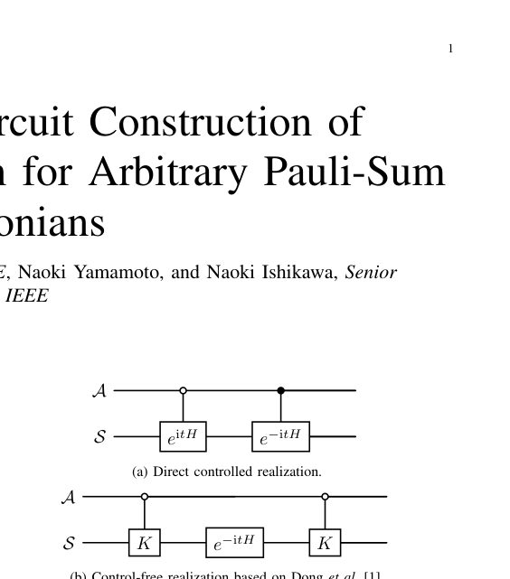
<figcaption class="paper-figure-caption"><b>Fig 1.</b> Fig. 1. Two realizations of the signed controlled time evolution in Eq. (1). The registers A and S are the ancilla and system registers, respectively. Open and filled control circles denote controls conditioned on |0⟩A and |1⟩A, respectively. In (a), the ancilla directly controls the two time-evolution branches. In (b), the two occurrences of the Pauli string K implement the conjugation Ke−itHK = eitH. Consequently, the ancilla controls only K, while the time-evolution block itself remains uncontrolled.</figcaption>
</figure>
<figure class="paper-figure-card">
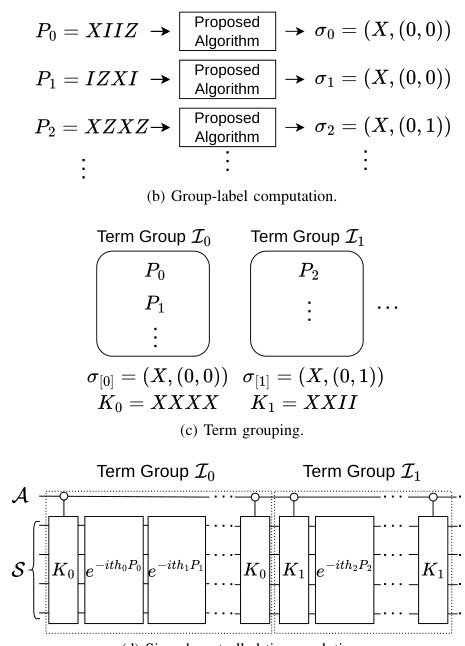
<figcaption class="paper-figure-caption"><b>Fig 2.</b> Fig. 2. Overall flow of the proposed grouped control-free construction. The input Hamiltonian is first processed term by term, and the resulting data are then assembled into the final signed controlled time-evolution circuit. (a) The starting point is a Pauli-sum Hamiltonian written as a linear combination of Pauli strings. (b) The proposed recursive algorithm is applied to each Pauli term to compute its group label. (c) Pauli terms with the same group label are collected into the same term-group, and that label determines the sign-flip Pauli string assigned to the group. (d) The grouped data are finally converted into a signed controlled time-evolution circuit in which the ancilla controls...</figcaption>
</figure>
<figure class="paper-figure-card">
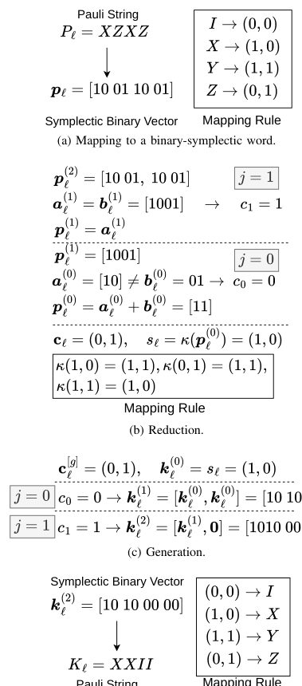
<figcaption class="paper-figure-caption"><b>Fig 3.</b> Fig. 3. Internal flow of the recursive construction for one Pauli term. The Pauli string is converted to a binary-symplectic word, Reduction produces a control-bit sequence and a root symbol, Generation constructs the sign-flip word from the corresponding group label, and the result is mapped back to a Pauli string. The mapping rule used to convert the root symbol into the seed symbol is the concrete map κ specified in Eqs. (56) and (57). The displayed example uses Pℓ= XZXZ with n = 4 and N = 4, and no zero padding is present.</figcaption>
</figure>
<figure class="paper-figure-card">

<figcaption class="paper-figure-caption"><b>Fig 4.</b> Fig. 3 shows the data flow of Reduction and Generation for one Pauli term.</figcaption>
</figure>
<figure class="paper-figure-card">
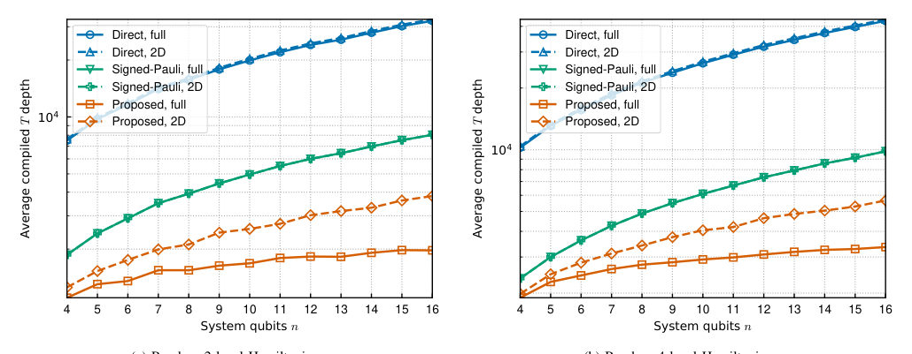
<figcaption class="paper-figure-caption"><b>Fig 5.</b> Fig. 4. Average compiled T depth for random Hamiltonians. The direct construction controls every elementary gate in the controlled time-evolution circuit. The signed-Pauli construction implements each signed controlled Pauli evolution as an ancilla-extended Pauli rotation. The proposed construction removes ancilla control from the grouped Pauli-evolution blocks.</figcaption>
</figure>
</div>

<p><strong>Summary.</strong> The paper presents a novel, efficient algorithm to construct quantum circuits for controlled time-evolution governed by Pauli-sum Hamiltonians. By grouping Hamiltonian terms and using specialized sign-flip Pauli strings, it drastically reduces the circuit depth compared to standard methods. This is crucial for simulating complex physical models like spin systems on current quantum hardware.</p>
<p><strong>Why it may be interesting.</strong> This work provides concrete algorithmic improvements for simulating complex quantum dynamics on near-term hardware by minimizing the required number of costly non-Clifford gates (T gates).</p>
<details>
<summary>Detailed structure</summary>
<p><strong>Main problem.</strong> Developing an efficient quantum circuit construction for controlled time-evolution when the governing Hamiltonian is a Pauli-sum.</p>
<p><strong>Main result.</strong> The proposed recursive algorithm significantly reduces compiled T depth and CX depth (e.g., 85.2% reduction on Kagome) compared to conventional methods by grouping terms and implementing control-free evolution blocks.</p>
<p><strong>Method.</strong> The method partitions the Pauli-sum Hamiltonian into term-groups, finds associated sign-flip Pauli strings ($K_g$) using symplectic algebra, and constructs the controlled evolution circuit based on these groups.</p>
<p><strong>Model / system.</strong> The system is a quantum register evolving under an arbitrary Pauli-sum Hamiltonian $H = \sum h_\ell P_\ell$, requiring controlled time-evolution $   ext{DH}(t)$. Benchmarks use structured spin Hamiltonians like the Kagome lattice.</p>
<p><strong>Key observables.</strong> Compiled T depth, compiled CX depth, and phase-rotation layer count are used to quantify circuit efficiency improvements.</p>
<p><strong>Important parameters / regimes.</strong> The size of the system (e.g., 24 spins for Kagome), connectivity model (full vs. grid), and the structure of the Pauli terms.</p>
<p><strong>Assumptions / limitations.</strong> The construction relies on mapping commutation relations to binary symplectic compatibility problems, and later sections assume applicability via product formulas (Lie-Trotter expansion).</p>
<p><strong>Figures summary.</strong> Figures illustrate circuit depth comparisons for random and structured Hamiltonians (Kagome lattice), showing the dramatic reduction in T/CX depth achieved by the proposed method.</p>
<p><strong>Paper structure.</strong> The paper progresses from defining the controlled time-evolution problem to developing a recursive, group-based algorithm utilizing symplectic algebra. It then validates this approach through extensive numerical benchmarks comparing circuit depths against direct and signed-Pauli constructions.</p>
</details>
<details>
<summary>Abstract</summary>
<p>Controlled time-evolution circuits select forward or backward Hamiltonian time evolution according to the state of an ancilla qubit. They are fundamental building blocks in quantum eigenvalue transformation of unitaries, Hamiltonian filtering, and related quantum algorithms. A direct realization adds ancilla control to the elementary gates of the time-evolution circuit and therefore increases the two-qubit gate count, compiled T depth and CX depth. We develop an efficient recursive algorithm that, for an arbitrary Pauli-sum Hamiltonian, partitions the input Pauli terms into groups and assigns to each group a sign-flip Pauli string that anti-commutes with the in-group terms, thereby removing ancilla control from the grouped time-evolution blocks. Numerical benchmarks on random Hamiltonians and structured spin Hamiltonians show reductions in compiled T depth and compiled CX depth. For a Kagome Hamiltonian with 24 spins under full connectivity, the proposed construction reduces the compiled T depth by 85.2% and the compiled CX depth by 68.9%, compared with a conventional implementation that decomposes the Hamiltonian into individual Pauli terms and implements the controlled time evolution of each term by directly adding the ancilla qubit to the corresponding Pauli-rotation circuit.</p>
</details>
<p><sub><a href="#top">↑ back to top</a></sub></p>

<p><a id="paper-2606.05442"></a></p>
<h3 id="newtons-identity-in-finite-bead-fermionic-partition-function"><a href="http://arxiv.org/abs/2606.05442v1">Newton's Identity in Finite-Bead Fermionic Partition Function</a></h3>
<p><strong>Authors:</strong> A. Chaudhary, J. Valenzuela<br>
<strong>Type:</strong> theory · <strong>Category:</strong> statistical mechanics · <strong>PDF:</strong> <a href="https://arxiv.org/pdf/2606.05442v1">https://arxiv.org/pdf/2606.05442v1</a><br>
<strong>Analysis basis:</strong> full PDF text, analyzed in chunks
<strong>Topic relevance:</strong> <code>Keldysh / 2PI / non-Gaussian methods</code> <strong>1/5</strong> · <code>analog quantum simulation</code> <strong>1/5</strong></p>
<div class="figure-strip-hint">↔ Scroll figures horizontally</div>
<div class="paper-figures-scroll">
<figure class="paper-figure-card">
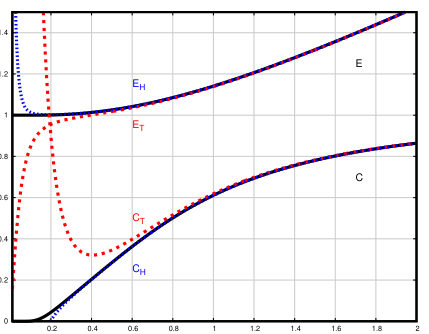
<figcaption class="paper-figure-caption"><b>Fig 1.</b> FIG. 1. Heat capacity and Energy estimators using analytical results in section V. Black solid curves show the continuum limit, while the red (Hamiltonian) and blue (Thermodynamic) correspond to the PA propagator with N = 8. Correct asymptotic behavior is observed for the energy (linear) and heat capacity (one degree of freedom per particle). Results agree with calculations by Takahashi and Imada [6].</figcaption>
</figure>
<figure class="paper-figure-card">
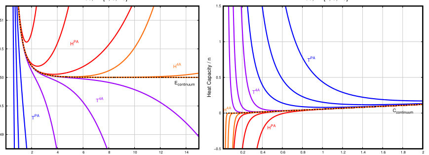
<figcaption class="paper-figure-caption"><b>Fig 2.</b> FIG. 2. Analytical convergence comparison between estimators for the PA and 4A propagators for 50 fermions</figcaption>
</figure>
<figure class="paper-figure-card">
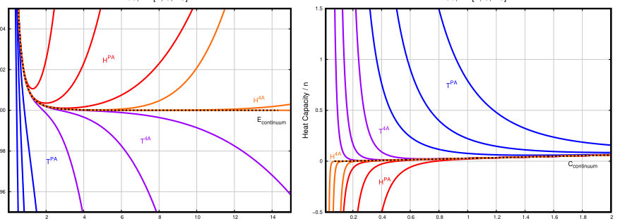
<figcaption class="paper-figure-caption"><b>Fig 3.</b> FIG. 3. Analytical convergence comparison between estimators for the PA and 4A propagators for 100 fermions.</figcaption>
</figure>
</div>

<p><strong>Summary.</strong> This paper derives an exact closed-form expression for the finite-bead partition function of non-interacting fermions in a harmonic trap by relating its recursion relation to Newton's identity. This allows for the analytical calculation of key thermodynamic quantities like energy and specific heat for any number of particles and beads.</p>
<p><strong>Why it may be interesting.</strong> It provides an exact analytical framework for calculating quantum statistical mechanical quantities (like energy and specific heat) in a lattice/path integral setting, bypassing complex numerical simulations for 1D systems.</p>
<details>
<summary>Detailed structure</summary>
<p><strong>Main problem.</strong> The primary goal is deriving an exact, finite-bead recursion relation for the one-dimensional $n$-fermion partition function ($Z_N^n$) and using it to calculate thermodynamic properties.</p>
<p><strong>Main result.</strong> An exact closed-form expression for the partition function, $Z_N^n = b^{n/2} \prod_{i=1}^{n} (1 / (1 - b^i))$, was derived by mapping the recursion relation onto Newton's identity.</p>
<p><strong>Method.</strong> The method involves deriving a finite-bead recursion from the path integral determinant form, identifying it with known identities relating power sums and elementary symmetric polynomials, and then calculating thermodynamic quantities analytically.</p>
<p><strong>Model / system.</strong> The system modeled is non-interacting fermions confined in a one-dimensional harmonic trap. The calculation uses a finite-bead representation of the partition function, which can be generalized to arbitrary interactions.</p>
<p><strong>Key observables.</strong> Partition function ($Z_N^n$), Thermodynamic Energy ($E_{T,N}^n$), Hamiltonian Energy ($E_{H,N}^n$), and specific heats ($C_{T,N}^n, C_{H,N}^n$).</p>
<p><strong>Important parameters / regimes.</strong> Number of fermions ($n$), number of imaginary time slices/beads ($  au$ or $N$), and the parameter $b = e^{-N\mu}$.</p>
<p><strong>Assumptions / limitations.</strong> The derivation is rigorously established for the 1D case; extension to higher dimensions (like $d=2$) is noted as a future challenge due to the sign problem.</p>
<p><strong>Figures summary.</strong> Figures compare the convergence of energy and specific heat calculated using different propagators (PA vs. 4A) across varying system sizes ($n$) and bead numbers ($N$).</p>
<p><strong>Paper structure.</strong> The paper establishes the finite-bead recursion relation, derives the closed-form solution by invoking Newton's identity, calculates the thermodynamic observables from this form, and discusses convergence properties.</p>
</details>
<details>
<summary>Abstract</summary>
<p>For non-interacting fermions in a harmonic trap, the partition function at any discrete number of imaginary time slices (or beads) and for any choice of short-time propagator admits an exact recursion relation derived directly from the contracted determinant form of the path integral. This finite-bead recursion is distinct from earlier continuum-limit recursions, which do not apply to the discrete time partition functions. By identifying a direct correspondence between this recursion and Newton's identity, application of a closed-form result from the theory of partitions provides an exact expression for the one-dimensional $n$-fermion finite-bead partition function. From this, the Thermodynamic and Hamiltonian energies and specific heats are analytically calculated for any $n$, $N$, $τ$, and propagator choice.</p>
</details>
<p><sub><a href="#top">↑ back to top</a></sub></p>

<p><a id="paper-2606.05603"></a></p>
<h3 id="quantum-radar-cross-section-with-two-photon-entangled-states"><a href="http://arxiv.org/abs/2606.05603v1">Quantum Radar Cross Section with two-photon entangled states</a></h3>
<p><strong>Authors:</strong> Sunghwa Kang, Jihwan Kim, Zaeill Kim, Duk Y. Kim, Yong Sup Ihn, Su-Yong Lee, Sean Crowe, Stefan Evans, Marcio de Andrade, Joanna Ptasinski<br>
<strong>Type:</strong> theory · <strong>Category:</strong> other · <strong>PDF:</strong> <a href="https://arxiv.org/pdf/2606.05603v1">https://arxiv.org/pdf/2606.05603v1</a><br>
<strong>Analysis basis:</strong> full PDF text, analyzed in chunks
<strong>Topic relevance:</strong> <code>entanglement &amp; information structure</code> <strong>1/5</strong> · <code>interference shaping light</code> <strong>1/5</strong></p>
<div class="figure-strip-hint">↔ Scroll figures horizontally</div>
<div class="paper-figures-scroll">
<figure class="paper-figure-card">
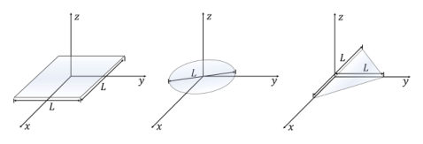
<figcaption class="paper-figure-caption"><b>Fig 1.</b> FIG. 1. Targets with two-dimensional geometries. L denotes the length of a side of a square, the diameter of a circle, the base and height of a triangle. We set L = 1m.</figcaption>
</figure>
<figure class="paper-figure-card">
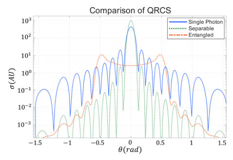
<figcaption class="paper-figure-caption"><b>Fig 2.</b> FIG. 2. Monostatic QRCS for a square plate target consisting of 961 atoms arranged on a uniform grid.</figcaption>
</figure>
<figure class="paper-figure-card">
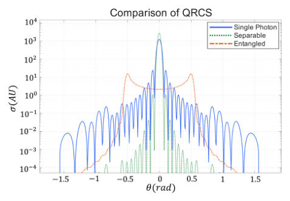
<figcaption class="paper-figure-caption"><b>Fig 3.</b> FIG. 3. Monostatic QRCS for a circular plate target consist- ing of 709 atoms.</figcaption>
</figure>
<figure class="paper-figure-card">
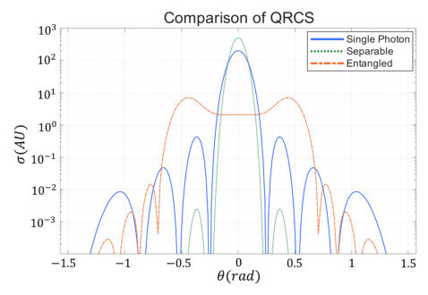
<figcaption class="paper-figure-caption"><b>Fig 4.</b> FIG. 4. Monostatic QRCS for a triangular plate target con- sisting of 462 atoms.</figcaption>
</figure>
<figure class="paper-figure-card">
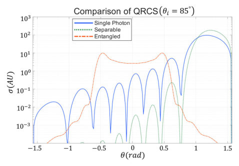
<figcaption class="paper-figure-caption"><b>Fig 5.</b> FIG. 6. Bistatic QRCS for a circular plate target at an inci- dent angle θi = 85◦.</figcaption>
</figure>
</div>

<p><strong>Summary.</strong> This paper theoretically analyzes the Quantum Radar Cross Section (QRCS) using two-photon entangled states. It shows that utilizing signal-signal entanglement provides an enhancement in detection capability compared to classical or single-photon sources. The results are demonstrated across various 2D targets, confirming the utility of quantum correlations for advanced sensing applications.</p>
<p><strong>Why it may be interesting.</strong> This work bridges quantum optics and applied physics by demonstrating a tangible advantage of quantum correlations (entanglement) for sensing applications like radar, which is highly relevant to quantum information processing and advanced measurement techniques.</p>
<details>
<summary>Detailed structure</summary>
<p><strong>Main problem.</strong> The study investigates how using two-photon entangled states can enhance the Quantum Radar Cross Section (QRCS) compared to single-photon or separable classical sources.</p>
<p><strong>Main result.</strong> Two-photon entanglement, particularly in signal-signal correlations, provides a measurable enhancement in QRCS, especially visible in the side lobes of the scattering pattern. Furthermore, non-maximal entanglement can sometimes outperform maximally entangled states for specific geometries and parameters.</p>
<p><strong>Method.</strong> The authors derive the biphoton QRCS using scattering theory applied to two-photon entangled states, employing the double-Gaussian approximation for arbitrary entanglement degrees.</p>
<p><strong>Model / system.</strong> The model involves quantum radar detection where photons scatter off various two-dimensional target geometries (square, circle, triangle) in both monostatic and bistatic configurations. The analysis is based on atom-photon scattering principles.</p>
<p><strong>Key observables.</strong> Quantum Radar Cross Section ($\sigma_Q$), which quantifies the enhancement over single-photon or separable QRCS.</p>
<p><strong>Important parameters / regimes.</strong> Entanglement parameters ($\sigma, \mu$), target size ($L$), wavelength ($\lambda$), and the degree of entanglement quantified by the Schmidt number $K$.</p>
<p><strong>Assumptions / limitations.</strong> The analysis relies on the double-Gaussian approximation for the incident state and assumes atoms have randomly oriented dipole moments. A key distinction is made between indistinguishable (formulated) and distinguishable photons.</p>
<p><strong>Figures summary.</strong> Figures illustrate various 2D target geometries (Square, Circle, Triangle) and present comparative plots of Monostatic and Bistatic QRCS results for different entanglement levels and targets.</p>
<p><strong>Paper structure.</strong> The paper progresses from defining the QRCS using two-photon entangled states, deriving the general formula via the double-Gaussian approximation, and then numerically evaluating this enhancement across various target geometries and entanglement regimes in both monostatic and bistatic setups.</p>
</details>
<details>
<summary>Abstract</summary>
<p>We study two-photon entangled states for quantum radar cross section (QRCS), which is an extension of a single-photon QRCS formula. Since signal-idler entanglement does not provide any enhancement of the QRCS [Brandsema's PhD Thesis (2017)], we focus on signal-signal entanglement and derive the corresponding biphoton QRCS. We show that it can provide an enhancement over the single-photon QRCS and two-photon separable QRCS, where the performance is evaluated for various two-dimensional target geometries in monostatic/bistatic configurations. Furthermore, using the double-Gaussian approximation, we derive QRCS formula for biphoton states with arbitrary degree of entanglement and compute the resulting scattering patterns.</p>
</details>
<p><sub><a href="#top">↑ back to top</a></sub></p>

<p><a id="paper-2606.05282"></a></p>
<h3 id="the-double-well-done-doubly-well"><a href="http://arxiv.org/abs/2606.05282v1">The Double Well Done Doubly-Well</a></h3>
<p><strong>Authors:</strong> Aurélien Dersy, Matthew D. Schwartz<br>
<strong>Type:</strong> theory · <strong>Category:</strong> other · <strong>PDF:</strong> <a href="https://arxiv.org/pdf/2606.05282v1">https://arxiv.org/pdf/2606.05282v1</a><br>
<strong>Analysis basis:</strong> full PDF text, analyzed in chunks
<strong>Topic relevance:</strong> <code>Keldysh / 2PI / non-Gaussian methods</code> <strong>1/5</strong> · <code>driven-dissipative phase transition</code> <strong>1/5</strong></p>
<div class="figure-strip-hint">↔ Scroll figures horizontally</div>
<div class="paper-figures-scroll">
<figure class="paper-figure-card">
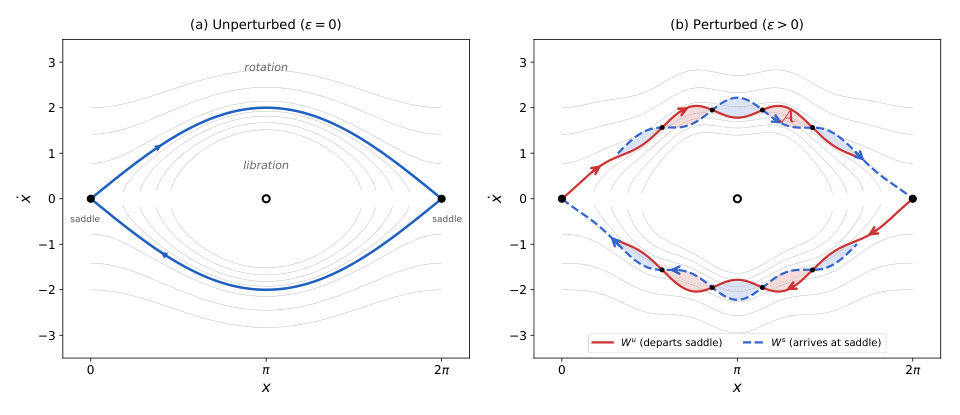
<figcaption class="paper-figure-caption"><b>Fig 1.</b> Figure 1: Phase portrait of the pendulum ¨x = sin x. The pendulum down at rest is x = π and the unstable equilibrium saddle is at x = 0 or x = 2π. (a) Unperturbed: the separatrix (blue) divides libration from rotation. The stable and unstable manifolds of each saddle point coincide exactly. (b) With rapid periodic forcing (ε &gt; 0): the unstable manifold W u (solid red, departing each saddle) and stable manifold W s (dashed blue, arriving at each saddle) split apart and cross transversely at homoclinic points (black dots), creating lobes of area A. This area—the flux of initial conditions transported across the old separatrix per forcing cycle—is exponentially small: A(ε) ∼e−π/(2ε).</figcaption>
</figure>
<figure class="paper-figure-card">
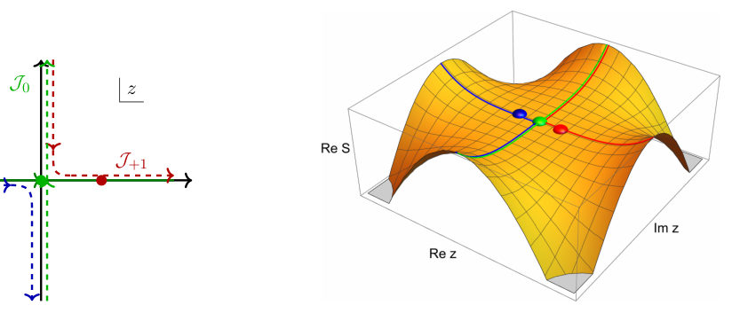
<figcaption class="paper-figure-caption"><b>Fig 2.</b> Figure 2: Left: The complex z-plane with three saddle points: minima at z = ±1 and a maximum at z = 0. The original integration contour is the real line. Each thimble passes through its corresponding saddle point with matching color: J−1 (blue) from −∞curving down to −i∞, J+1 (red) from +i∞curving right to +∞, and J0 (green) along the imaginary axis. Right: The real part of the action S(z) = 1</figcaption>
</figure>
<figure class="paper-figure-card">
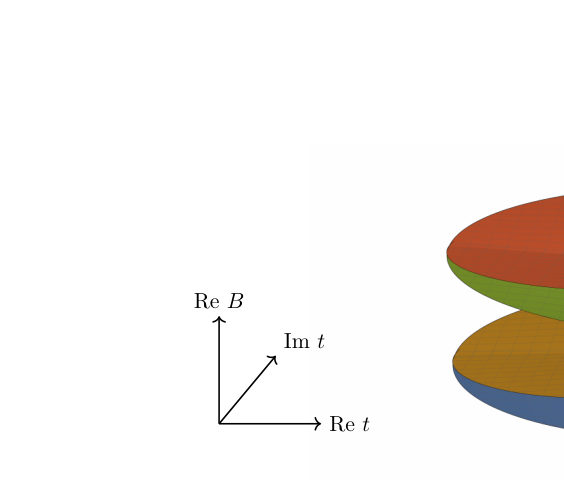
<figcaption class="paper-figure-caption"><b>Fig 3.</b> Figure 3: Four-sheeted Riemann surface for the 0D double well, defined by t = 1</figcaption>
</figure>
<figure class="paper-figure-card">
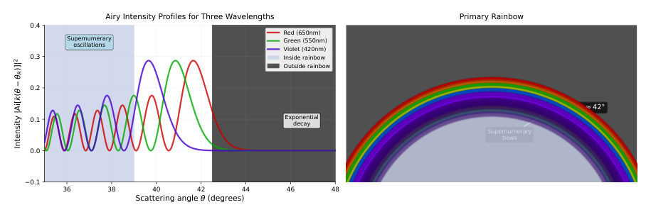
<figcaption class="paper-figure-caption"><b>Fig 4.</b> Figure 4: Left: The Airy function Ai(z) showing the transition from oscillatory behavior for z &lt; 0 to exponential decay for z &gt; 0. Right: Double rainbow with intensity computed from I(θ) ∝ | Ai[k2/3(θ −θR)]|2 for each wavelength. The primary rainbow appears at ∼42◦and secondary at ∼51◦, with supernumerary bows visible as brightness variations inside each bow.</figcaption>
</figure>
<figure class="paper-figure-card">
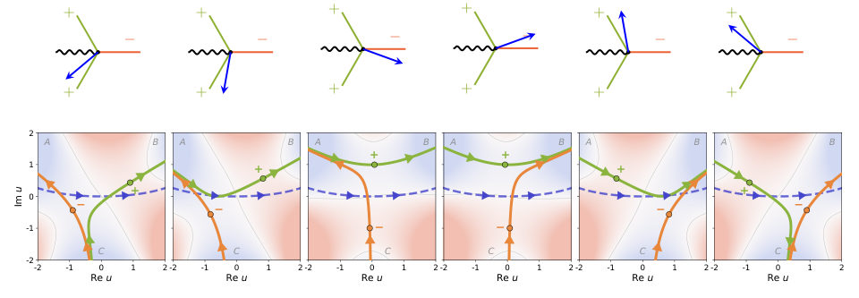
<figcaption class="paper-figure-caption"><b>Fig 5.</b> Figure 5: Top: Stokes diagrams showing the phase θ = arg z in each region. Bottom: The thimble structure computed numerically by steepest descent flow, with the Airy contour (dashed blue), J+ (green), and J−(orange). The asymptotically convergent regions are shaded in blue and denoted as A, B, C.</figcaption>
</figure>
</div>

<p><strong>Summary.</strong> This paper provides a comprehensive theoretical framework to calculate the exact energy spectrum of double-well potentials by unifying two advanced semiclassical techniques: Exact WKB quantization and the Euclidean Path Integral. It demonstrates that both methods rigorously encode non-perturbative physics via resurgence, providing a unified understanding of how tunneling effects modify quantum energy levels.</p>
<p><strong>Why it may be interesting.</strong> The deep connection between semiclassical physics (instantons), complex geometry (elliptic curves/thimbles), and formal summation methods (resurgence) provides powerful, general tools for analyzing quantum systems where simple perturbation theory fails.</p>
<details>
<summary>Detailed structure</summary>
<p><strong>Main problem.</strong> The central problem is understanding how perturbative (small $\hbar$) and non-perturbative (exponentially small) physics are rigorously connected in quantum systems, formalized by the concept of resurgence.</p>
<p><strong>Main result.</strong> The paper develops two complementary methods—Exact WKB and Euclidean Path Integral using Lefschetz thimbles—to compute the full trans-series expansion for energy levels, demonstrating their mathematical equivalence.</p>
<p><strong>Method.</strong> It employs advanced techniques from complex analysis, including Borel summation, Picard-Lefschetz theory, and specialized quantization conditions (Voros symbols/thimble integrals), to sum divergent asymptotic series.</p>
<p><strong>Model / system.</strong> The primary model is the symmetric double-well potential, $V(z) = rac{\omega^2}{8R^2}(z^2 - R^2)^2$, which exhibits tunneling and parity splitting. The analysis extends to general quantum systems with multiple minima.</p>
<p><strong>Key observables.</strong> Energy eigenvalues ($E_N$), the partition function ($Z(T)$), and the trans-series coefficients derived from instanton actions ($S_I$).</p>
<p><strong>Important parameters / regimes.</strong> The small parameter $\hbar$ (Planck's constant) and the inter-well separation $R$, which controls the tunneling exponent.</p>
<p><strong>Assumptions / limitations.</strong> The perturbative series are asymptotic, requiring resummation techniques like Borel summation to capture non-perturbative physics. The analysis relies on mapping complex saddle points via Lefschetz thimbles.</p>
<p><strong>Figures summary.</strong> Figure 1 illustrates the phase portrait of a driven pendulum, showing how stable and unstable manifolds split transversely with forcing ($\epsilon > 0$), creating exponentially small lobes whose area dictates tunneling effects.</p>
<p><strong>Paper structure.</strong> The paper is structured around comparing two rigorous approaches: first, using Exact WKB methods involving Stokes phenomena and Voros symbols for quantization; second, using the Euclidean Path Integral formalism decomposed via Lefschetz thimbles to calculate the partition function trans-series. Both converge on a shared mathematical structure.</p>
</details>
<details>
<summary>Abstract</summary>
<p>The symmetric double-well potential is one of the simplest quantum-mechanical systems in which perturbative and non-perturbative physics are deeply entangled. Its energy levels have non-analytic expansions in inverse powers of the inter-well separation, with factorially growing coefficients, while the parity splitting is exponentially small and invisible to perturbation theory. Resurgence ties the two features together, organizing the exact spectrum into a single tightly-constrained trans-series. This paper gives a self-contained account of this trans-series from two complementary approaches: exact WKB and the Euclidean path integral, developed in a common notation with explicit calculations through the four-instanton level and three-loop order. In exact WKB, Stokes phenomena encoded in the Delabaere--Dillinger--Pham relations control the analytic continuation of the wavefunction past turning points. The quantization condition expressed in terms of Voros symbols then determines the full trans-series. The DDP relations are local and do not require knowing the global topology of the energy surface, but that surface is an elliptic curve. In the path integral, elliptic curves enter differently: the classical saddle points are doubly-periodic elliptic functions of Euclidean time, and Stokes phenomena play out within the finite-dimensional manifold of quasi-zero modes rather than through analytic continuation of the wavefunction. A Lefschetz thimble decomposition determines which saddles contribute, and the resulting partition function trans-series is much simpler than the energy trans-series: at each instanton order the $T$-dependence is a polynomial fixed by the quasi-zero-mode thimble integrals. Together, the two approaches deploy a shared mathematical infrastructure in complementary ways, showing that the double well is an ideal setting to explore resurgence.</p>
</details>
<p><sub><a href="#top">↑ back to top</a></sub></p>

<p><a id="paper-2606.06365"></a></p>
<h3 id="a-framework-for-low-overhead-quantum-fault-tolerance-via-spacetime-lifting"><a href="http://arxiv.org/abs/2606.06365v1">A framework for low-overhead quantum fault tolerance via spacetime lifting</a></h3>
<p><strong>Authors:</strong> Yijia Xu, Yixu Wang, Zi-Wen Liu<br>
<strong>Type:</strong> theory · <strong>Category:</strong> quantum information and computing · <strong>PDF:</strong> <a href="https://arxiv.org/pdf/2606.06365v1">https://arxiv.org/pdf/2606.06365v1</a><br>
<strong>Analysis basis:</strong> full PDF text, analyzed in chunks
<strong>Topic relevance:</strong> <code>entanglement &amp; information structure</code> <strong>1/5</strong></p>
<div class="figure-strip-hint">↔ Scroll figures horizontally</div>
<div class="paper-figures-scroll">
<figure class="paper-figure-card">
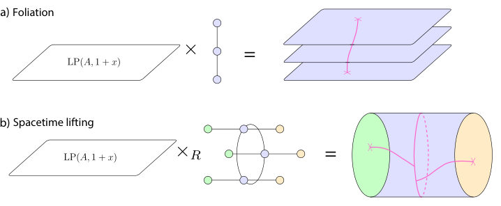
<figcaption class="paper-figure-caption"><b>Fig 1.</b> FIG. 1. Comparison between (a) foliation and (b) spacetime lifting. In foliation, we take tensor product between a good lifted product code with a repetition code. The lifted product code has linear distance d, to achieve fault distance d, we have to let the repetition code to have at least length-d, so the total spacetime cost is O(d2). However, in spacetime lifting, we take a lifted product (tensor product quotiented out a ℤd cyclic symmetry) between a distance-d lifted product code and a thickened length-d repetition code with portal, to achieve fault distance being at least d, we only need O(d) spacetime cost instead of O(d2), which can also be interpreted as fault-tolerant syndrome...</figcaption>
</figure>
<figure class="paper-figure-card">
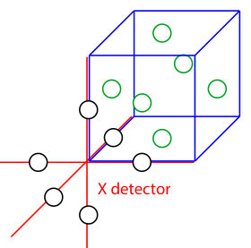
<figcaption class="paper-figure-caption"><b>Fig 2.</b> FIG. 2. Foliated 2D toric code, where the black cycles represent primal faults associated with a X (primal) detector, and the green cycles represent dual faults associated with a Z (dual) detector. Here we consider the phenomenological error model.</figcaption>
</figure>
<figure class="paper-figure-card">
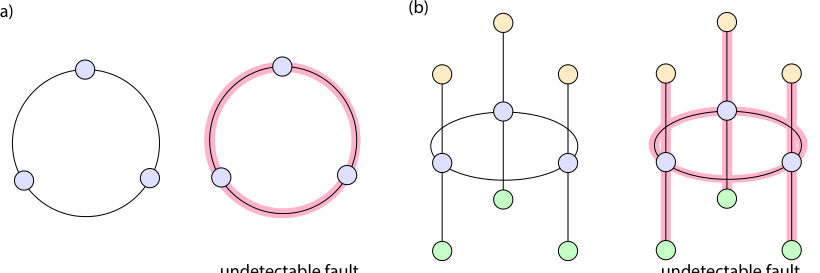
<figcaption class="paper-figure-caption"><b>Fig 3.</b> FIG. 3. The third classical code C used in the double lifted product LP(A, B, C), where an edge represents a classical check, and a node represents a classical bit. (a) cyclic repetition code with parity check matrix 1 + x. The right figure represents the undetectable fault along the direction of 1 + x which is porportional to jℓwith weight being at least ℓ. (b) The ‘thickened’ the cyclic repetition code by introducing the top and bottom portal whose parity check matrix is C. The right figure represents a undetectable fault which includes non-trivial action along the cyclic repetition component 1 + x, hence the undetectable fault has weight at least 3ℓ.</figcaption>
</figure>
</div>

<p><strong>Summary.</strong> This paper introduces 'spacetime lifting' to construct advanced fault complexes designed for robust quantum computation. It demonstrates that this method achieves near-optimal fault tolerance scaling with minimal overhead compared to traditional methods. This provides a general algebraic framework for designing highly efficient, spacetime-aware quantum error correction protocols.</p>
<p><strong>Why it may be interesting.</strong> It provides a powerful, general algebraic tool—the fault complex—to analyze resource scaling in quantum computation that explicitly incorporates time evolution (spacetime), which is crucial for realistic hardware implementations beyond static error correction.</p>
<details>
<summary>Detailed structure</summary>
<p><strong>Main problem.</strong> Developing low-overhead protocols for fault-tolerant quantum computation that account for both spatial and temporal overheads (spacetime).</p>
<p><strong>Main result.</strong> The authors show that 'spacetime lifting' yields fault complexes whose fault distances scale almost linearly with the total spacetime cost, significantly outperforming existing constructions.</p>
<p><strong>Method.</strong> The work introduces 'spacetime lifting,' a method to construct fault complexes from symmetry-reduced product structures beyond standard foliation, and interprets these complexes as measurement-based cluster-state protocols.</p>
<p><strong>Model / system.</strong> The model uses algebraic formalism via 4-term chain complexes (fault complexes) derived from lifted product codes. These complexes describe spacetime fault-tolerant processes for quantum information encoding.</p>
<p><strong>Key observables.</strong> Fault Distance ($d_{primal}, d_{dual}$), Spacetime Cost, Logical Teleportation success.</p>
<p><strong>Important parameters / regimes.</strong> Almost linear scaling $d \ge \Omega(N/\log N)$ vs. polynomial scaling of older methods; expansion parameters $\alpha, eta$.</p>
<p><strong>Assumptions / limitations.</strong> The analysis relies on the existence of product structures and the ability to construct fault complexes via spacetime lifting.</p>
<p><strong>Figures summary.</strong> Figures illustrate the comparison between standard foliation and spacetime lifting for achieving high fault distance with low overhead cost; diagrams show the structure of 4-term chain complexes mapping components to physical qubits/checks.</p>
<p><strong>Paper structure.</strong> The paper progresses by defining the need for spacetime consideration, introducing the algebraic framework (fault complexes), developing the 'spacetime lifting' construction, demonstrating its superior scaling properties over existing methods, and finally applying it to realize logical teleportation protocols.</p>
</details>
<details>
<summary>Abstract</summary>
<p>Fault-tolerant quantum computation is inherently a spacetime problem, requiring not merely good static quantum error-correcting codes but also low-overhead protocols for protecting and manipulating encoded quantum information over time. Fault complexes provide a homological framework for treating such protocols as single spacetime objects. In this work, we initiate the study of low-overhead fault complexes by introducing {spacetime lifting}, a method that constructs fault complexes from symmetry-reduced product structures beyond standard foliation. We show that spacetime lifting yields fault complexes and in particular {spacetime-lifted} memory experiments with almost-linear fault distance in the total spacetime cost, which substantially outperforms existing constructions. We further interpret fault complexes as measurement-based cluster-state protocols and identify general conditions under which they realize fault-tolerant logical teleportation, showing that spacetime-lifted constructions combine favorable scaling with operational schemes. Our study opens a path toward more efficient quantum fault tolerance through general complex constructions.</p>
</details>
<p><sub><a href="#top">↑ back to top</a></sub></p>

<p><a id="paper-2606.05947"></a></p>
<h3 id="double-bracket-quantum-algorithms-for-thermal-state-preparation"><a href="http://arxiv.org/abs/2606.05947v1">Double-bracket quantum algorithms for thermal state preparation</a></h3>
<p><strong>Authors:</strong> Andrew Wright, Reyhaneh Aghaei Saem, Supanut Thanasilp, Yudai Suzuki, Zoë Holmes<br>
<strong>Type:</strong> theory · <strong>Category:</strong> quantum information and computing · <strong>PDF:</strong> <a href="https://arxiv.org/pdf/2606.05947v1">https://arxiv.org/pdf/2606.05947v1</a><br>
<strong>Analysis basis:</strong> full PDF text, analyzed in chunks
<strong>Topic relevance:</strong> <code>non-equilibrium dynamics</code> <strong>1/5</strong></p>
<div class="figure-strip-hint">↔ Scroll figures horizontally</div>
<div class="paper-figures-scroll">
<figure class="paper-figure-card">
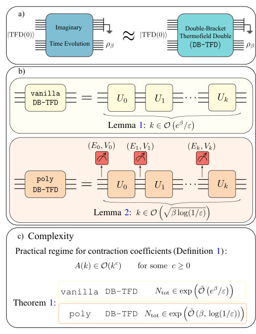
<figcaption class="paper-figure-caption"><b>Fig 1.</b> FIG. 1. Overview of Double-bracket Thermofield Double (DB- TFD) approaches for thermal state preparation. (a) The reduced state of imaginary-time evolution applied to a thermofield double state gives the target thermal state. To implement imaginary-time evolution, we employ the double-bracket quantum algorithm frame- work. (b) We introduce two variants: the vanilla DB-TFD ap- proach and the poly DB-TFD approach. The number of iterations required by the vanilla DB-TFD method scales as O(eβ/ε), as established in Lemma 1. In contrast, Lemma 2 shows an exponen- tial improvement of the number of iterations O( p</figcaption>
</figure>
<figure class="paper-figure-card">
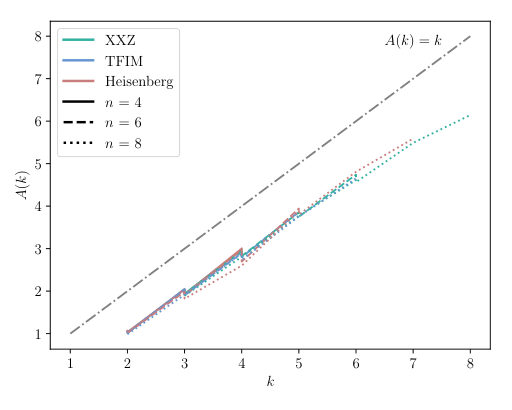
<figcaption class="paper-figure-caption"><b>Fig 2.</b> FIG. 2. Scaling of the contraction coefficients across different sys- tems and system sizes. The contraction coefficient A(k) is evalu- ated for different systems (XXZ, TFIM, and the Heisenberg model), system sizes n, and polynomial order k. In particular, we observe A(k) &lt; k, suggesting that the growth of the contraction coefficient is slower than the assumption in Eq. (28). For a given k, the val- ues of A(k) remain similar across the considered systems and system sizes. This observation suggests that the contraction coefficient ex- hibits only a weak dependence on the specific system and its size.</figcaption>
</figure>
<figure class="paper-figure-card">
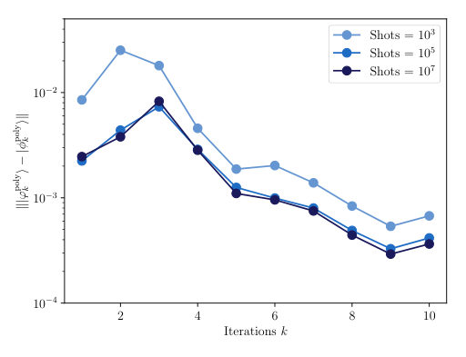
<figcaption class="paper-figure-caption"><b>Fig 3.</b> FIG. 3. Error between poly DB-TFD with infinite and finite measurement shots. We compare the impact of statistical noise in the estimation of energy and variance required to determine the parameters (s, θ). In particular, we compare results obtained using poly DB-TFD with infinite measurement shots and with a total of Nshots = 103, 105, 107 (divided uniformly between the Pauli terms that need to be measured) per iteration. In contrast to the analytical results in App. F.1, no exponential growth with respect to k is ob- served even for Nshots = 103. Since the results obtained with 105</figcaption>
</figure>
<figure class="paper-figure-card">
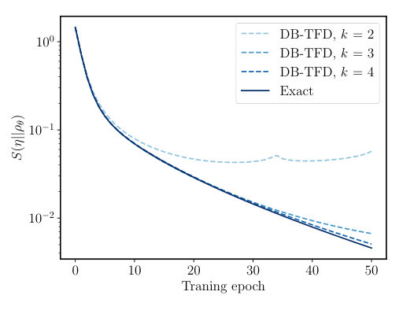
<figcaption class="paper-figure-caption"><b>Fig 4.</b> FIG. 5. Training loss trajectories for poly DB-TFD with different polynomial degrees k. We consider a generative modeling task for the XXZ model to assess how effectively poly DB-TFD with poly- nomial degrees k = 2, 3, 4 reduces the loss. At each training epoch, the thermal state required for computing the loss gradient is prepared using the DB-TFD approaches. Even a small number of iterations yields a training-loss trajectory that closely matches that obtained us- ing the exact thermal state.</figcaption>
</figure>
<figure class="paper-figure-card">
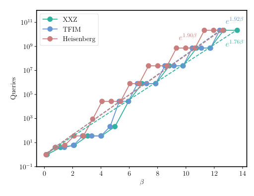
<figcaption class="paper-figure-caption"><b>Fig 5.</b> FIG. 4. Number of queries for poly DB-TFD to obtain the ther- mofield double state at different inverse temperatures β. We nu- merically evaluate the number of queries required by poly DB-TFD to achieve a thermal state with precision ε = 0.01. Here, we con- sider three models: one-dimensional XXZ, TFIM, and Heisenberg model. For comparison, we include reference scalings proportional to exp(β). The fitting suggests an overall scaling of exp(O(β)) in line with the analysis based on the assumed practical regime of con- traction coefficient in Eq. (28).</figcaption>
</figure>
</div>

<p><strong>Summary.</strong> The paper introduces Double-bracket Thermofield Double (DB-TFD) algorithms for preparing thermal quantum states. It details two approaches, vanilla and poly DB-TFD, which simulate imaginary-time evolution on the TFD state using double-bracket techniques. The main finding is that Poly DB-TFD offers a theoretically favorable scaling compared to existing methods, making it promising for near-term quantum hardware.</p>
<p><strong>Why it may be interesting.</strong> This work directly addresses a fundamental problem in quantum simulation—preparing equilibrium states—by proposing advanced quantum circuit techniques that aim to surpass the limitations of current NISQ-era algorithms like Variational Quantum Eigensolver (VQE) variants.</p>
<details>
<summary>Detailed structure</summary>
<p><strong>Main problem.</strong> The primary goal is developing quantum algorithms to efficiently prepare thermal (Gibbs) states $
ho(eta)$ for general many-body Hamiltonians.</p>
<p><strong>Main result.</strong> The proposed Double-bracket Thermofield Double (DB-TFD) algorithm provides a promising, non-variational route for thermal state preparation whose complexity scales favorably with inverse temperature ($eta$).</p>
<p><strong>Method.</strong> The method utilizes double-bracket quantum algorithms to simulate imaginary-time evolution on the Thermofield Double (TFD) state. Two variants are proposed: vanilla DB-TFD and Poly DB-TFD, which uses polynomial approximations.</p>
<p><strong>Model / system.</strong> The theory applies to general quantum systems described by a Hamiltonian $H_s$, utilizing the TFD state $|	ext{TFD}(eta)
angle$ as a purification of the target thermal state $
ho(eta)$. Benchmarks include XXZ, TFIM, and Heisenberg models.</p>
<p><strong>Key observables.</strong> Query complexity ($N_{	ext{tot}}$), circuit depth, iteration count, and error bounds ($\epsilon$).</p>
<p><strong>Important parameters / regimes.</strong> Inverse temperature ($eta$), target precision ($\epsilon$), polynomial degree ($p$ or $k$), and the contraction coefficient $A(k)$.</p>
<p><strong>Assumptions / limitations.</strong> The analysis relies on bounding various algorithmic errors (product formula, intrinsic) and assumes specific scaling regimes for error coefficients.</p>
<p><strong>Figures summary.</strong> Figures compare iteration scaling between vanilla and poly DB-TFD methods; one figure shows the contraction coefficient $A(k)$ across different models/sizes; another compares training loss trajectories for generative modeling.</p>
<p><strong>Paper structure.</strong> The paper develops the theory by first establishing the link between TFD evolution and thermal states, then detailing the two algorithmic variants (vanilla vs. poly), followed by rigorous error analysis using product formulas, and concluding with complexity comparisons against variational methods.</p>
</details>
<details>
<summary>Abstract</summary>
<p>We propose quantum algorithms for preparing thermal states via the simulation of the thermofield double states. The key idea is to leverage double-bracket quantum algorithms to implement imaginary-time evolution on thermofield double states, whose reduced state realizes the Gibbs state. Our method, termed double-bracket thermofield double (DB-TFD), introduces two variants. The first, the vanilla DB-TFD algorithm, directly implements imaginary-time evolution using double-bracket quantum imaginary-time evolution. The second, poly DB-TFD, employs double-bracket quantum signal processing to approximate the imaginary-time evolution operator via a polynomial transformation. We demonstrate that the complexity of the poly DB-TFD algorithm scales exponentially with the inverse temperature in a broad practical regime. This scaling is consistent with existing methods, and numerical simulations support the corresponding theoretical bound. We further demonstrate the utility of DB-TFD in quantum Boltzmann machines for generative modeling, achieving improved performance compared with variational imaginary-time evolution approaches. These results establish DB-TFD as a promising route for thermal state preparation in the near-term and early-fault-tolerant regimes.</p>
</details>
<p><sub><a href="#top">↑ back to top</a></sub></p>

<p><a id="paper-2606.06430"></a></p>
<h3 id="dynamic-structural-inhomogeneity-in-strontium-ruthenate"><a href="http://arxiv.org/abs/2606.06430v1">Dynamic structural inhomogeneity in strontium ruthenate</a></h3>
<p><strong>Authors:</strong> M. Spaić, R. Spieker, I. Bilonić, A. Paul, B. Krohnke Orquera, X. He, E. Topić, A. Minelli, F. Ye, N. Kikugawa, D. Sokolov, M. J. Krogstad, S. Rosenkranz, R. Osborn, T. Birol, M. Greven, D. Pelc<br>
<strong>Type:</strong> experiment · <strong>Category:</strong> strongly correlated electrons · <strong>PDF:</strong> <a href="https://arxiv.org/pdf/2606.06430v1">https://arxiv.org/pdf/2606.06430v1</a><br>
<strong>Analysis basis:</strong> full PDF text, analyzed in chunks
<strong>Topic relevance:</strong> <code>driven-dissipative phase transition</code> <strong>1/5</strong></p>
<div class="figure-strip-hint">↔ Scroll figures horizontally</div>
<div class="paper-figures-scroll">
<figure class="paper-figure-card">
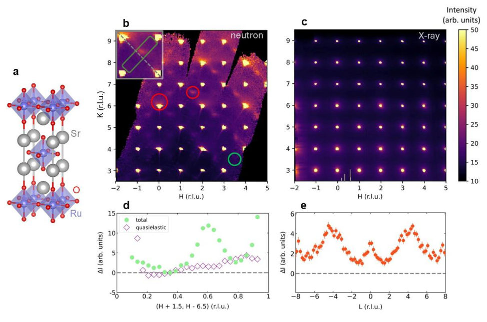
<figcaption class="paper-figure-caption"><b>Fig 1.</b> Fig. 1 | Neutron and x-ray diffuse scattering in strontium ruthenate. (a) The highly symmetric (average) body-centered tetragonal structure of Sr2RuO4. (b) Neutron total scattering data in the HK-plane at 5 K, integrated along [001] from L = –12 to 12 reciprocal lattice units (r.l.u.). Red circles: Diffuse features are around some half-integer positions and integer (Bragg) positions on the high-wavevector side. Green circle: an extinction, i.e., a half-integer position where no scattering is observed, which is key for the reconstruction of the atomic displacement pattern. (c) Diffuse x-ray scattering data, integrated in the same L-range as in (b), measured at 30 K. No diffuse features are...</figcaption>
</figure>
<figure class="paper-figure-card">
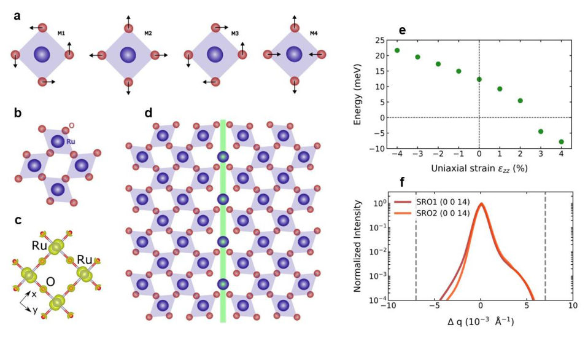
<figcaption class="paper-figure-caption"><b>Fig 2.</b> Fig. 2 | Atomic displacement pattern and absence of extrinsic disorder. (a) The four irreducible in-plane distortions of the Ru-O plaquette. (b) Shear-like distortion that consists of equal weights of M1 and M4 and is consistent with the neutron scattering data (see Methods and Extended Data Fig. 2 for details on refinement). (c) orbital order from ab initio calculations, where the isosurface represents partial charge density associated with states at the zone-centre valence band maximum (see Methods for details). The charge density distribution underlines alternating short and long Ru- O bonds in close correspondence with the observed distortion. (d) Defect structure that includes the...</figcaption>
</figure>
<figure class="paper-figure-card">
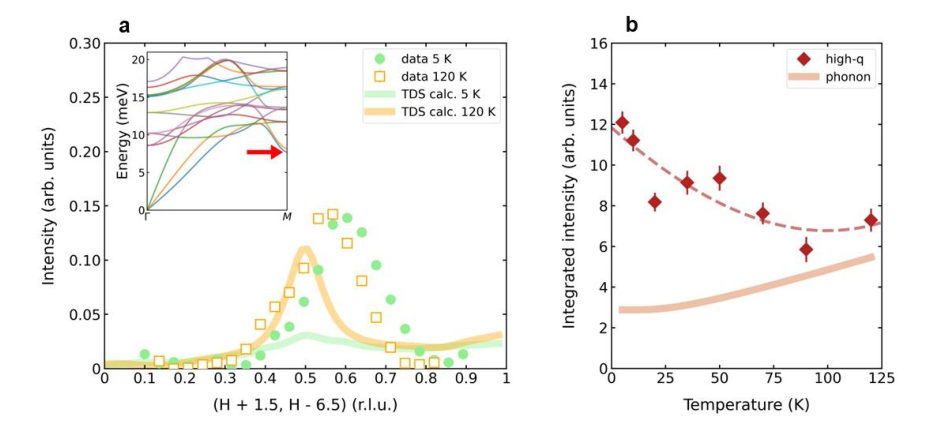
<figcaption class="paper-figure-caption"><b>Fig 3.</b> Fig. 3 | Temperature dependence of diffuse scattering. (a) Comparison of neutron total scattering data to a calculation of phonon scattering (TDS) at two temperatures, demonstrating that the observed asymmetric features are inconsistent with scattering due to phonons, especially at low temperatures. Inset: low-energy (&lt;20 meV) ab initio phonon dispersions used in the TDS calculation, which are in good agreement with experiment [17,24] and assumed to be temperature- independent. The octahedral rotation mode at the zone boundary M point (arrow) results in the diffuse scattering peak, and the TDS decrease upon cooling originates from the Bose occupation factor. (b) Temperature dependence of...</figcaption>
</figure>
</div>

<p><strong>Summary.</strong> This work uses advanced neutron and x-ray scattering to reveal dynamic, self-organized structural inhomogeneity within Sr2RuO4. The findings demonstrate that these fluctuations are not due to disorder or simple phonons but rather reflect underlying orbital ordering tendencies. This suggests that lattice distortions driven by electronic structure play a crucial role in the material's exotic superconducting state.</p>
<p><strong>Why it may be interesting.</strong> The finding that subtle structural dynamics are intrinsically linked to electronic correlations (orbital order) provides an experimental handle on the complex interplay between lattice degrees of freedom and exotic superconductivity in strongly correlated oxides.</p>
<details>
<summary>Detailed structure</summary>
<p><strong>Main problem.</strong> To uncover the origin of self-organized structural inhomogeneity on picosecond timescales in Strontium Ruthenate (SRO) and determine its role in the material's electronic properties.</p>
<p><strong>Main result.</strong> The observed dynamic structural inhomogeneity originates from correlated oxygen displacements consistent with orbital order, suggesting that orbital effects play a pivotal role in SRO's physics.</p>
<p><strong>Method.</strong> Diffuse neutron and x-ray scattering experiments were used to probe atomic displacements on picosecond timescales, complemented by first-principles calculations for theoretical comparison.</p>
<p><strong>Model / system.</strong> The study focuses on Strontium Ruthenate (Sr2RuO4), a model quasi-two-dimensional metal known for its strong electronic correlations and potential exotic superconductivity. The investigation centers on intrinsic structural fluctuations within the RuO2 planes.</p>
<p><strong>Key observables.</strong> Diffuse scattering patterns, energy transfer in the quasi-elastic channel, reciprocal space asymmetry, and temperature dependence of diffuse intensity.</p>
<p><strong>Important parameters / regimes.</strong> Picosecond fluctuation timescale; orbital distortion amplitudes ($\sim 0.01$ lattice units); low temperatures (e.g., 5 K).</p>
<p><strong>Assumptions / limitations.</strong> The analysis assumes that the observed structural signal is not due to simple phonon contributions or extrinsic disorder, ruling out strain-induced effects based on volume fraction measurements.</p>
<p><strong>Figures summary.</strong> Figures compare total scattering data against calculated Phonon Thermal Diffuse Scattering (TDS), showing asymmetric features inconsistent with phonons; other figures detail the derived shear-like distortion pattern consistent with orbital order calculations.</p>
<p><strong>Paper structure.</strong> The paper progresses by first using diffuse scattering to identify intrinsic structural correlations, ruling out simple phonon or strain origins. It then models these distortions using irreducible representations ($    ext{M}1$ and $  ext{M}4$) derived from <em>ab initio</em> theory, establishing a link between orbital order and dynamic lattice structure.</p>
</details>
<details>
<summary>Abstract</summary>
<p>Strontium ruthenate (Sr$_2$RuO$_4$, SRO) has been the subject of intense research as a model quasi-two-dimensional metal with strong electronic correlations and potential exotic multi-component superconductor. Yet the nature of the superconducting state and its emergence remain debated, despite highly detailed knowledge of the normal-state electronic properties. Here we use diffuse neutron and x-ray scattering to uncover self-organized structural inhomogeneity on the picosecond timescale in SRO. We show that these structural correlations do not originate from extrinsic disorder but rather involve correlated displacements of oxygen atoms in the quintessential RuO$_2$ planes. Moreover, the observed displacement pattern is consistent with distortions due to orbital order that we obtain in first-principles calculations, which suggests that orbital effects could play a pivotal role in the physics of SRO. The appearance of such dynamic inhomogeneity may be relevant for a wide range of prominent oxides with similar lamellar structures, such as the cuprates and nickelates.</p>
</details>
<p><sub><a href="#top">↑ back to top</a></sub></p>

<p><a id="paper-2606.05899"></a></p>
<h3 id="high-dimensional-theory-of-lora-fine-tuning-in-a-solvable-attention-model"><a href="http://arxiv.org/abs/2606.05899v1">High-Dimensional Theory of LoRA Fine-Tuning in a Solvable Attention Model</a></h3>
<p><strong>Authors:</strong> O. Duranthon, F. Boncoraglio, L. Zdeborová<br>
<strong>Type:</strong> theory · <strong>Category:</strong> disordered systems and neural networks · <strong>PDF:</strong> <a href="https://arxiv.org/pdf/2606.05899v1">https://arxiv.org/pdf/2606.05899v1</a><br>
<strong>Analysis basis:</strong> full PDF text, analyzed in chunks
<strong>Topic relevance:</strong> <code>Keldysh / 2PI / non-Gaussian methods</code> <strong>1/5</strong></p>
<div class="figure-strip-hint">↔ Scroll figures horizontally</div>
<div class="paper-figures-scroll">
<figure class="paper-figure-card">
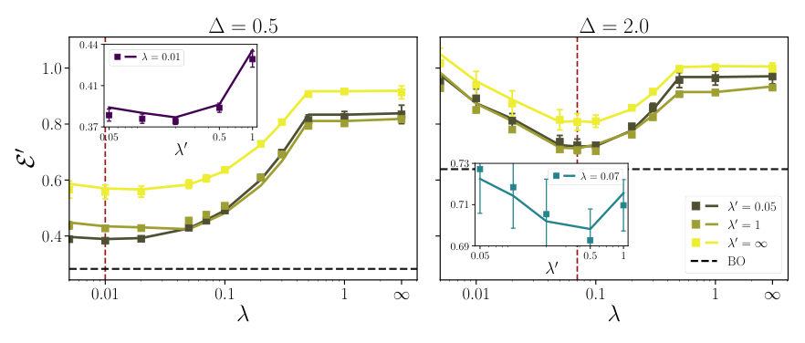
<figcaption class="paper-figure-caption"><b>Fig 1.</b> Figure 1: Fine-tuning test error E′ versus pre-training regularization λ for λ′ ∈{0.05, 1, ∞}, at α = 0.1, α′ = 3, T = 3, κ0 = κ = 1, and noise levels ∆= 0.5 (left) and ∆= 2 (right). Insets show E′ versus λ′ at the optimal λ. Solid lines are state-evolution predictions; square markers are D = 150 simulations averaged over four runs. Vertical dark-red dashed lines mark curve minima, and the black dashed line is the Bayes-optimal benchmark. The cases λ′ = ∞and λ = ∞correspond respectively to no LoRA adaptation ( ˆw = 0) and LoRA-only fine-tuning ( ˆW = 0).</figcaption>
</figure>
<figure class="paper-figure-card">
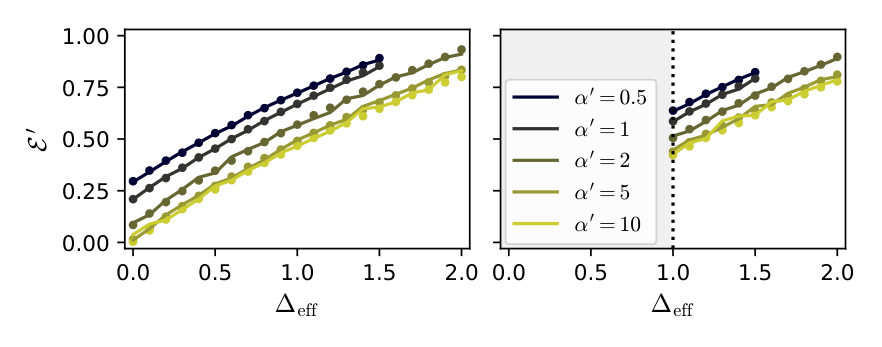
<figcaption class="paper-figure-caption"><b>Fig 2.</b> Figure 2: Effect of pre-training on the fine-tuning task. Fine-tuning test error E′ vs ∆eff = ∆/2 + Q0 −2M + Q, parameterized by fixing M = 1 and varying Q0 = Q. Left: ∆= 0; right: ∆= 2. Lines are the theoretical predictions; dots are simulations at D = 104 over five independent runs. T = 3, λ′ = 0.5, σ softmax.</figcaption>
</figure>
<figure class="paper-figure-card">

<figcaption class="paper-figure-caption"><b>Fig 3.</b> Figure 3: Fine-tuning input samples form the pre-training set e = 1. Left: pre-training train error L and test error E; center: fine-tuning test error E′; right: fine-tuning overlap ow; vs regularizations λ and λ′. Lines are the theoretical predictions; dots are simulations at D = 103</figcaption>
</figure>
<figure class="paper-figure-card">

<figcaption class="paper-figure-caption"><b>Fig 4.</b> Figure 4: Active fine-tuning. Left: fine-tuning test errors E′( ˆW, ˆw) and E′( ˆW, ˆwActFT); inset: difference between the test errors ∆E′; right: overlaps ow; vs ∆eff = ∆/2 + Q0 −2M + Q, parameterized by fixing M = 1 and varying Q0 = Q; for different labeling ratios ρ. Lines are the theoretical predictions; dots are simulations at D = 104 over five independent runs. We minimize E′ over λ′ ∈{0.1, 0.2, 0.5, 1} for each point. ¯α′ = 100, T = 3, ∆= 0, σ softmax.</figcaption>
</figure>
<figure class="paper-figure-card">

<figcaption class="paper-figure-caption"><b>Fig 5.</b> Figure 5: Effect of pre-training on the fine-tuning task for the rescaled identity activation σ : x 7→x/T. Fine-tuning test error E′ versus ∆eff = ∆/2 + Q0 −2M + Q. Left: test error; right: excess test error with respect to the value at ∆eff = 0. Lines are theoretical predictions; dots are simulations at D = 5 × 103 over five independent runs. T = 3.</figcaption>
</figure>
</div>

<p><strong>Summary.</strong> This paper establishes a comprehensive high-dimensional statistical theory for understanding how low-rank adaptation (LoRA) fine-tuning performs after extensive pre-training. By mapping the problem onto order parameters derived from free energy minimization, it quantifies performance losses via an 'effective noise' term. The results offer actionable insights into optimizing both the pre-training and subsequent fine-tuning regimes.</p>
<p><strong>Why it may be interesting.</strong> This work bridges statistical physics tools (replica theory, free energy minimization) directly into modern deep learning optimization problems (LoRA), providing rigorous theoretical guarantees on generalization bounds in high dimensions.</p>
<details>
<summary>Detailed structure</summary>
<p><strong>Main problem.</strong> The paper develops a high-dimensional statistical theory to characterize Low-Rank Adaptation (LoRA) fine-tuning in attention models, analyzing the interplay between extensive pre-training and limited fine-tuning data.</p>
<p><strong>Main result.</strong> The performance of LoRA is characterized by an effective noise term derived from order parameters, providing explicit predictions for test errors and suggesting optimal procedures like active fine-tuning or map recalibration.</p>
<p><strong>Method.</strong> The analysis employs high-dimensional statistical physics techniques, including the replica method and free entropy maximization, to derive asymptotic characterizations of learning dynamics in the limit of infinite dimensions.</p>
<p><strong>Model / system.</strong> The model is a single-head attention layer undergoing pre-training on abundant data followed by fine-tuning via a rank-one LoRA update. The analysis focuses on Gaussian input sequences for tractability.</p>
<p><strong>Key observables.</strong> Test errors ($E', E$), representation overlap, effective noise ($\Delta_{	ext{eff}}$), and order parameters (e.g., $Q, M$).</p>
<p><strong>Important parameters / regimes.</strong> High-dimensional limits ($D 	o \infty$), pre-training regularization strength ($\lambda$), fine-tuning sample size ratio ($
ho$), and rescaling factors ($eta$).</p>
<p><strong>Assumptions / limitations.</strong> The analysis relies on the high-dimensional limit, Gaussian input sequences for tractability, and specific structural assumptions about the attention mechanism (e.g., tied keys/queries).</p>
<p><strong>Figures summary.</strong> Figures illustrate how recalibrating the frozen pre-trained map ($\hat{W}$) using a factor $eta/eta^\star$ improves downstream LoRA transfer, and show the effect of pre-training on fine-tuning performance parameterized by effective noise.</p>
<p><strong>Paper structure.</strong> The paper builds from foundational high-dimensional theory (defining order parameters) to deriving state-evolution equations for both training stages. It then applies this framework to analyze specific phenomena like active fine-tuning, map recalibration, and the comparison against Bayes-optimal benchmarks.</p>
</details>
<details>
<summary>Abstract</summary>
<p>We develop a high-dimensional statistical theory of low-rank adaptation (LoRA) in attention models, capturing the interplay between pre-training and fine-tuning. We introduce a solvable framework in which a single-head attention layer is first pre-trained on a data-abundant task and subsequently adapted via a rank-one LoRA update on limited data. In the high-dimensional limit, both stages admit a sharp asymptotic characterization in terms of a finite set of order parameters, yielding explicit predictions for test errors and representation alignment. Our analysis shows that the impact of pre-training on LoRA is summarized by an effective noise term, from which we derive prescriptions for the optimal pre-training procedure. We also demonstrate a regime with a mismatch between the value of the test error and representation quality, and propose an application of our theory to active fine-tuning.</p>
</details>
<p><sub><a href="#top">↑ back to top</a></sub></p>

<p><a id="paper-2606.05279"></a></p>
<h3 id="hypergroup-symmetry-in-relative-quantum-field-theories-and-chiral-algebras"><a href="http://arxiv.org/abs/2606.05279v1">Hypergroup Symmetry in Relative Quantum Field Theories and Chiral Algebras</a></h3>
<p><strong>Authors:</strong> Terry Gannon, Brandon C. Rayhaun<br>
<strong>Type:</strong> theory · <strong>Category:</strong> other · <strong>PDF:</strong> <a href="https://arxiv.org/pdf/2606.05279v1">https://arxiv.org/pdf/2606.05279v1</a><br>
<strong>Analysis basis:</strong> full PDF text, analyzed in chunks
<strong>Topic relevance:</strong> <code>Keldysh / 2PI / non-Gaussian methods</code> <strong>1/5</strong></p>
<div class="figure-strip-hint">↔ Scroll figures horizontally</div>
<div class="paper-figures-scroll">
<figure class="paper-figure-card">

<figcaption class="paper-figure-caption"><b>Fig 1.</b> Figure 1: The Hilbert space Va consists of boundary local operators O(z) on which the bulk anyon a can terminate. By the state/operator correspondence, it can also be viewed as the Hilbert space that the bulk TQFT assigns to a disk which is punctured at the center by the anyon a.</figcaption>
</figure>
<figure class="paper-figure-card">

<figcaption class="paper-figure-caption"><b>Fig 2.</b> Figure 2: Left: the representation of an automorphism g of a chiral algebra. Right: the action of an automorphism g on a (non-genuine) local operator O(z) in a module Va produces a local operator (g · O)(z) in Vg∗(a).</figcaption>
</figure>
<figure class="paper-figure-card">

<figcaption class="paper-figure-caption"><b>Fig 3.</b> Figure 3: The twisted module Va consists of (non-genuine) boundary local operators O(z) which live at the junction of a g-twisted anyon a and the boundary topological line junction Lg. By the state/operator correspondence, Va can also be thought of as the Hilbert space that the bulk TQFT assigns to a disk with boundary condition described by V and with insertions of topological defects as shown on the right.</figcaption>
</figure>
<figure class="paper-figure-card">

<figcaption class="paper-figure-caption"><b>Fig 4.</b> Figure 4: The bulk to boundary functor FB→∂.</figcaption>
</figure>
<figure class="paper-figure-card">

<figcaption class="paper-figure-caption"><b>Fig 5.</b> Figure 5: A (non-genuine) local operator O(z) ∈Va can be thought of either as living at the junction of a and Lg as in the left, or at the end of the boundary line FB→∂(a) as on the right.</figcaption>
</figure>
</div>

<p><strong>Summary.</strong> This theoretical paper introduces a comprehensive framework for studying noninvertible symmetries in relative Quantum Field Theories. It develops novel mathematical machinery involving hypergroups and dome algebras to analyze the relationship between bulk topological defects and boundary chiral symmetries. The work provides deep structural insights into how different components of a quantum theory must correspond mathematically.</p>
<p><strong>Why it may be interesting.</strong> While highly abstract, the deep connections drawn between symmetry groups, topological defects, and underlying algebraic structures (hypergroups) provide powerful mathematical tools applicable to understanding exotic phases of matter or boundary physics in condensed matter systems.</p>
<details>
<summary>Detailed structure</summary>
<p><strong>Main problem.</strong> The paper develops a general framework for handling noninvertible symmetries within relative Quantum Field Theories (QFTs) in two spacetime dimensions, extending known results from absolute QFTs.</p>
<p><strong>Main result.</strong> It establishes correspondences between finite symmetries in rational chiral algebras and conformal embeddings of finite index, while also detailing how to construct full theories by 'gluing' left- and right-moving chiral symmetries.</p>
<p><strong>Method.</strong> The methodology involves developing formalism using hypergroups and dome algebras to analyze the bulk-boundary correspondence in TQFTs. It relies heavily on advanced algebraic structures like Modular Tensor Categories.</p>
<p><strong>Model / system.</strong> The focus is on Relative QFTs, which are defined as living at the boundary of a higher-dimensional Topological QFT (TQFT). The mathematical tools involve chiral algebras and their associated representation categories.</p>
<p><strong>Key observables.</strong> Topological line defects, boundary conditions of CFTs, hypergroup structure constants, and the $g$-function of boundary states.</p>
<p><strong>Important parameters / regimes.</strong> The central charge ($c$) of the underlying conformal field theory; the rank of the hypergroup action (e.g., rank-2 for specific examples).</p>
<p><strong>Assumptions / limitations.</strong> The framework assumes rationality of chiral algebras and relies on extending known results from absolute QFTs to the relative setting.</p>
<p><strong>Figures summary.</strong> Figures illustrate state/operator correspondences ($   ext{Va} \leftrightarrow     ext{Rep}(V)$), how automorphisms act topologically ($S_g$), and the construction of full theories by compactifying 3D TQFTs on a solid ball.</p>
<p><strong>Paper structure.</strong> The paper progresses from defining the general framework for relative symmetries, detailing specific implications for absolute CFTs (like boundary condition correspondences), and concluding with concrete examples involving complex algebraic structures like hypergroups acting on known chiral algebras.</p>
</details>
<details>
<summary>Abstract</summary>
<p>A QFT is said to be relative if it lives at the boundary of a topological QFT in one higher dimension. We develop a general framework for working with noninvertible symmetries of relative theories in two spacetime dimensions, extending several well-known results for absolute QFTs. We emphasize various new features which arise in the relative setting, including the role of topological surfaces of the bulk, and the appearance of hypergroups and certain generalizations of tube algebras known as dome algebras. Our formalism is particularly well-suited for studying rational chiral algebras, where it predicts that finite symmetries are in explicit one-to-one correspondence with conformal embeddings of finite index.   We describe several implications of our framework for absolute theories. First, we explain how to "glue" together symmetries of the left- and right-moving chiral algebras of a 2D CFT to produce topological line defects of the full theory. Second, we derive a precise correspondence between boundary conditions of a 2D CFT and symmetries of its chiral algebra. This correspondence has several structural corollaries: in diagonal rational CFTs, we demonstrate that the topological line defects of the theory act transitively on its boundary conditions, and further that the identity Cardy state has the smallest $g$-function amongst all boundary conditions, including those which only preserve Virasoro symmetry.   We conclude by illustrating our results in a variety of examples. For instance, we show that, if there exists a rational chiral algebra with central charge $c=8$ whose modular tensor category is the Drinfeld center of the Haagerup fusion category, then it must arise as the fixed points of a rank-2 hypergroup acting on the $SU(3)_1\otimes (E_{6})_1$ chiral algebra.</p>
</details>
<p><sub><a href="#top">↑ back to top</a></sub></p>

<p><a id="paper-2606.05955"></a></p>
<h3 id="magnetic-flux-as-a-quantized-lorentz-pseudoscalar-and-its-relation-to-electric-charge-quantization"><a href="http://arxiv.org/abs/2606.05955v1">Magnetic flux as a quantized Lorentz pseudoscalar and its relation to electric charge quantization</a></h3>
<p><strong>Authors:</strong> Cyril Belardinelli<br>
<strong>Type:</strong> theory · <strong>Category:</strong> other · <strong>PDF:</strong> <a href="https://arxiv.org/pdf/2606.05955v1">https://arxiv.org/pdf/2606.05955v1</a><br>
<strong>Analysis basis:</strong> full PDF text, analyzed in chunks
<strong>Topic relevance:</strong> <code>Keldysh / 2PI / non-Gaussian methods</code> <strong>1/5</strong></p>
<div class="figure-strip-hint">↔ Scroll figures horizontally</div>
<div class="paper-figures-scroll">
<figure class="paper-figure-card">

<figcaption class="paper-figure-caption"><b>Fig 1.</b> Figure 1. The electric charge orbits outside a long solenoid (d ≪ 2b) through which an electric current flows. Since the solenoid is assumed to be very thin and very long, the point charge moves in a region with negligible magnetic flux density B. However, the magnetic vector potential A is still present; it cannot be eliminated by any gauge transformation.</figcaption>
</figure>
<figure class="paper-figure-card">

<figcaption class="paper-figure-caption"><b>Fig 2.</b> Figure 2. Under a Lorentz boost, the magnetic flux density B⊥ perpendicular to the boost direction increases by the γ−factor, but the magnetic flux remains invariant.</figcaption>
</figure>
</div>

<p><strong>Summary.</strong> This theoretical paper investigates charge quantization by analyzing a charged particle orbiting a solenoid. It derives the condition $q \cdot \Phi = n \cdot hc/2$ from solving the Schrödinger equation, thereby linking electric charge quantization directly to magnetic flux quantization. The work also uses relativistic methods to prove that the magnetic flux behaves as a Lorentz pseudoscalar.</p>
<p><strong>Why it may be interesting.</strong> While not directly focused on AMO systems, the rigorous application of quantum mechanics (Schrödinger equation) to fundamental quantized physical constants ($q$ and $\Phi$) demonstrates deep connections between quantum theory and electromagnetism that are foundational to many advanced physics topics.</p>
<details>
<summary>Detailed structure</summary>
<p><strong>Main problem.</strong> The paper re-examines the fundamental question of electric charge quantization by establishing a direct mathematical link between the quantization of magnetic flux ($\Phi$) and the quantization of electric charge ($q$).</p>
<p><strong>Main result.</strong> Solving the Schrödinger equation for a charged particle around a solenoid yields a simultaneous quantization condition: $q \cdot \Phi = n \cdot hc/2$, suggesting both quantities are quantized. Furthermore, the magnetic flux is shown to behave as a Lorentz pseudoscalar.</p>
<p><strong>Method.</strong> The analysis combines solving the time-independent Schrödinger equation with advanced field theory techniques involving 4D integrals of the dual field tensor ($    ilde{F}_{\mu
u}$) and analyzing the transformation properties under Lorentz boosts.</p>
<p><strong>Model / system.</strong> The model involves a charged particle moving in the vicinity of a current-carrying solenoid, analyzed using quantum mechanics (Schrödinger equation) coupled with classical electromagnetism described by Maxwell's equations in Minkowski spacetime.</p>
<p><strong>Key observables.</strong> Magnetic flux ($\Phi$), electric charge ($q$), and the quantization constant $n$.</p>
<p><strong>Important parameters / regimes.</strong> Planck's constant ($h$), speed of light ($c$), and the integer quantum number ($n$).</p>
<p><strong>Assumptions / limitations.</strong> The derivation relies on boundary conditions for the wave function (periodicity) and specific mathematical identities involving step functions when calculating flux integrals in Minkowski space.</p>
<p><strong>Figures summary.</strong> Figure 1 illustrates the physical setup of a point charge orbiting outside a solenoid where the vector potential is non-zero. Figure 2 relates to how the magnetic flux remains invariant under Lorentz boosts while perpendicular components change.</p>
<p><strong>Paper structure.</strong> The paper progresses from analyzing the quantum mechanical problem (Schrödinger equation) in the presence of a solenoid's field, deriving the quantization condition, and then extending this analysis using relativistic methods involving 4D integrals and Lorentz transformations to confirm the nature of the flux as a pseudoscalar.</p>
</details>
<details>
<summary>Abstract</summary>
<p>In this paper, we re-examine the well-known question of why electric charges exist only in quantized portions. In this context, we revisit the motion of a charged particle in a field-free region around a current-carrying solenoid. Solving the corresponding Schrödinger equation leads to a simultaneous quantization condition for the magnetic flux and the electric charge. We also demonstrate the Lorentz invariance of this condition by showing that the magnetic flux behaves like a pseudoscalar under Lorentz transformations.</p>
</details>
<p><sub><a href="#top">↑ back to top</a></sub></p>

<p><a id="paper-2606.05886"></a></p>
<h3 id="polylogarithmic-structure-of-bragg-diffraction-in-finite-coherence-lattices"><a href="http://arxiv.org/abs/2606.05886v1">Polylogarithmic Structure of Bragg Diffraction in Finite-Coherence Lattices</a></h3>
<p><strong>Authors:</strong> Evangelos G. Filothodoros<br>
<strong>Type:</strong> theory · <strong>Category:</strong> statistical mechanics · <strong>PDF:</strong> <a href="https://arxiv.org/pdf/2606.05886v1">https://arxiv.org/pdf/2606.05886v1</a><br>
<strong>Analysis basis:</strong> full PDF text, analyzed in chunks
<strong>Topic relevance:</strong> <code>interference shaping light</code> <strong>1/5</strong></p>
<div class="figure-strip-hint">↔ Scroll figures horizontally</div>
<div class="paper-figures-scroll">
<figure class="paper-figure-card">

<figcaption class="paper-figure-caption"><b>Fig 1.</b> Figure 1: Polylogarithmic Bragg peak for TiO2 for various values of k0 parameter. We observe that finite reduced long-range order pro- duces negligible peak-position corrections but modifies the diffraction line shape and broadening.</figcaption>
</figure>
</div>

<p><strong>Summary.</strong> This paper introduces a polylogarithmic structure to model Bragg diffraction in materials with finite coherence or disorder. By framing the scattering amplitude as a function of a polylogarithm, it unifies peak positions, widths, and line shapes into one analytic description. This framework is particularly valuable for analyzing real-world disordered systems where conventional models require ad hoc broadening assumptions.</p>
<p><strong>Why it may be interesting.</strong> The connection drawn between lattice interference patterns and complex analysis (e.g., hyperbolic geometry via the dilogarithm) provides a powerful mathematical tool for analyzing quasi-periodic or disordered systems beyond standard scattering theory.</p>
<details>
<summary>Detailed structure</summary>
<p><strong>Main problem.</strong> To develop a generalized diffraction formalism that extends classical Bragg law by explicitly incorporating effects of finite coherence length, disorder, and non-uniform lattice weighting.</p>
<p><strong>Main result.</strong> The polylogarithm model provides a compact analytical framework where peak positions, widths, and line shapes arise from a single analytic structure, connecting diffraction theory to complex analysis via boundary singularities.</p>
<p><strong>Method.</strong> The scattering amplitude is modeled using a weighted multi-plane interference approach, expressing it as a polylogarithmic generating function $\text{Li}_m(z)$.</p>
<p><strong>Model / system.</strong> The model analyzes Bragg diffraction from lattices with structural correlations, utilizing an effective Hamiltonian and pair correlation functions $C(r) \sim 1/r^m e^{-r/k_0}$.</p>
<p><strong>Key observables.</strong> Scattering amplitude $F(\theta)$, measurable intensity $I(\theta)=|F(\theta)|^2$, peak positions, and line shapes.</p>
<p><strong>Important parameters / regimes.</strong> Finite coherence length ($\epsilon=1/k_0$), algebraic suppression exponent ($m$), and the complex variable argument $z$.</p>
<p><strong>Assumptions / limitations.</strong> The model is intended to generalize Bragg law; it assumes a specific form for correlation decay and that peak singularities map onto polylogarithm branch points.</p>
<p><strong>Figures summary.</strong> Figures show the polylogarithmic Bragg peak for $\text{TiO}_2$ at varying coherence lengths, confirming line shape modification without significant peak position shifts.</p>
<p><strong>Paper structure.</strong> The paper develops the mathematical framework using polylogarithms to describe scattering amplitudes in correlated lattices. It analyzes the limit $k_0 \to \infty$ (ideal case) and then examines finite-$k_0$ deviations, drawing analogies between diffraction singularities and critical phenomena/hyperbolic geometry.</p>
</details>
<details>
<summary>Abstract</summary>
<p>We develop a polylogarithmic structure for Bragg diffraction based on a weighted multi-plane interference model. Within this kind of construction, the scattering amplitude is expressed as a polylogarithmic generating function. By introducing extra contributions with power-law and the usual exponential decay, it takes the form $F(θ) = \mathrm{Li}_m\left(e^{iθ_{\mathrm{eff}} - ε}\right)$, where $ε$ is a finite coherence length. In the limit where $ε\rightarrow 0$, the argument of the polylogarithm approaches the unit circle and the classical Bragg condition corresponds to the approach of the polylogarithm argument toward its branch point $z=1$. This formulation provides a compact analytical framework for describing diffraction line shapes within a generalized correlation model in which peak positions, widths, and line shapes arise from a single analytic structure. Although we are able to recover the standard Bragg law for ideal crystals, the polylogarithm model captures deviations due to finite correlation length, disorder and non-uniform lattice coherence. We show that if Bragg peaks correspond to boundary singularities of the polylogarithm, a connection between diffraction theory and complex analysis arise. The proposed theoretical model may be particularly relevant for disordered or partially coherent materials, where conventional diffraction models often require additional phenomenological broadening assumptions.</p>
</details>
<p><sub><a href="#top">↑ back to top</a></sub></p>

<p><a id="paper-2606.06019"></a></p>
<h3 id="polymer-quantum-mechanics-on-compact-configuration-spaces"><a href="http://arxiv.org/abs/2606.06019v1">Polymer quantum mechanics on compact configuration spaces</a></h3>
<p><strong>Authors:</strong> Maxwell R. Siebersma, Basie Seibert, Samuel Shuman, David A. Craig<br>
<strong>Type:</strong> theory · <strong>Category:</strong> other · <strong>PDF:</strong> <a href="https://arxiv.org/pdf/2606.06019v1">https://arxiv.org/pdf/2606.06019v1</a><br>
<strong>Analysis basis:</strong> full PDF text, analyzed in chunks
<strong>Topic relevance:</strong> <code>analog quantum simulation</code> <strong>1/5</strong></p>
<div class="figure-strip-hint">↔ Scroll figures horizontally</div>
<div class="paper-figures-scroll">
<figure class="paper-figure-card">

<figcaption class="paper-figure-caption"><b>Fig 1.</b> FIG. 1. Position space for a point particle in one-dimensional polymer quantum mechanics. The quantum configuration space C = Rd is the real line with the discrete topology. In order to admit a well-defined dynamics, states are restricted to support on a graph γµ0 that is a regular lattice on C with points equally spaced at distance µ0.</figcaption>
</figure>
<figure class="paper-figure-card">

<figcaption class="paper-figure-caption"><b>Fig 2.</b> FIG. 2. A regular graph γµ0 of positions on the polymer quantized ring. The graph consists of N points distributed along the ring with uniform spacing µ0 = 2πR/N. The corresponding set of orthonormal position kets can be indexed from 1 to N, where |xk⟩≡|xk + Nµ0⟩. These kets form the basis for the finite-dimensional polymer graph Hilbert space Hγµ0 = L2(ZN, dµc).</figcaption>
</figure>
<figure class="paper-figure-card">

<figcaption class="paper-figure-caption"><b>Fig 3.</b> FIG. 3. The spectrum of energy levels of the polymer-quantized particle on a ring as a function of µ0/R. The red curves show the behavior of these energy levels. The green vertical lines are the allowed ratios of µ0/R = 2π/N for N ∈N; only the points where the red energy curves intersect the green lines correspond to valid energy levels for the discretized ring. For a given value of µ0/R, only levels Em with m ≤πR</figcaption>
</figure>
<figure class="paper-figure-card">

<figcaption class="paper-figure-caption"><b>Fig 4.</b> FIG. 4. The mapping from the wave function for a state |ψ⟩defined on the lattice γµ0 endowed with the discrete counting measure dµN to a corresponding state |ψc⟩∈HSch defined everywhere on the ring and normalized in the Lebesgue measure.</figcaption>
</figure>
<figure class="paper-figure-card">

<figcaption class="paper-figure-caption"><b>Fig 5.</b> FIG. 5. Convergence of polymer energy eigenfunctions to their Schr¨odinger-quantized counterparts for the polymer particle on a ring. The red and blue step functions are the real and imaginary parts of a polymer eigenfunction ϕc m(x). The orange and purple curves are similarly the real and imaginary components of the corresponding Schr¨odinger eigenstate Φm(x). The top plot corresponds to a polymer graph with N = 15, and the bottom plot to N = 200. As N →∞so that µ0/R →0, the polymer eigenstates become arbitrarily close to the Schr¨odinger eigenstates.</figcaption>
</figure>
</div>

<p><strong>Summary.</strong> This paper introduces Polymer Quantum Mechanics, a quantization approach designed for physical systems whose configuration space has a fundamentally discrete topology. It mathematically distinguishes this theory from standard Schrödinger QM by altering the nature of the Hilbert space and momentum representation. The work shows that while the underlying structure is different, the model correctly recovers standard quantum results in the appropriate continuum limit.</p>
<p><strong>Why it may be interesting.</strong> While not directly focused on AMO platforms, the rigorous development of alternative quantization schemes that handle discrete geometry is highly relevant for understanding quantum systems where boundary conditions or underlying spatial structure are quantized (e.g., in mesoscopic physics or lattice simulations).</p>
<details>
<summary>Detailed structure</summary>
<p><strong>Main problem.</strong> The paper develops Polymer Quantum Mechanics (PQM) as a quantization scheme for systems whose configuration space has a discrete topology, contrasting with standard Schrödinger quantization.</p>
<p><strong>Main result.</strong> PQM yields a distinct quantum theory by defining the Hilbert space on a finite graph structure, though it demonstrates that in the continuum limit, its energy eigenvalues and eigenfunctions converge to those of standard quantum mechanics.</p>
<p><strong>Method.</strong> The authors analyze canonical quantization using Weyl algebras, contrasting the continuous representation (Stone-von Neumann theorem) with the discrete polymer representation derived from assuming a discrete topology on configuration space.</p>
<p><strong>Model / system.</strong> The theory is applied to simple systems like a particle on a ring and a particle in a box defined on lattices. The mathematical framework involves analyzing representations of translation operators on Hilbert spaces defined over discrete or compactified groups (Bohr compactification).</p>
<p><strong>Key observables.</strong> Energy eigenvalues and eigenfunctions; canonical commutation relations (CCR); Poisson brackets.</p>
<p><strong>Important parameters / regimes.</strong> Planck's constant ($\hbar$); lattice spacing ($\mu_0$); the topology of the configuration space (discrete vs. continuous).</p>
<p><strong>Assumptions / limitations.</strong> The core assumption is that the underlying configuration space can be modeled with a discrete topology, leading to a violation of the weak continuity condition required by the Stone-von Neumann theorem.</p>
<p><strong>Figures summary.</strong> Not specified in detail, but the notes reference comparisons between Hilbert spaces (Table I) and explicit formulas for energy eigenvalues/eigenfunctions derived from recurrence relations or matrix diagonalization.</p>
<p><strong>Paper structure.</strong> The paper first reviews conventional quantization and then introduces PQM by analyzing systems with discrete topologies. It details the mathematical machinery involving Bohr compactification, comparing the resulting polymer Hilbert space to standard $L^2$ spaces, and finally applies these methods to specific solvable models like the particle on a ring.</p>
</details>
<details>
<summary>Abstract</summary>
<p>"Polymer quantum mechanics" is the name given to a quantization scheme inspired by loop quantum gravity in which the configuration space of the theory is chosen to have a discrete topology. Polymer quantization yields a representation of the canonical commutation relations that is genuinely distinct from the conventional "Schrödinger" representation. In this paper, we summarize the main features of polymer quantum mechanics and investigate in detail the polymer quantization of systems with configuration spaces that are classically compact. We show explicitly how using the standard construction of polymer states leads to a Hilbert space of states defined on a finite graph of points. By way of example, we find the exact energy eigenvalues and eigenfunctions for a particle on a ring and a particle in a box defined on such lattices, and discuss similarities and differences from standard Schrödinger quantum mechanics. We also explore the continuum limit of states in these systems, and demonstrate in detail how the exact eigenfunctions in the position representation approach their continuum counterparts.</p>
</details>
<p><sub><a href="#top">↑ back to top</a></sub></p>

<p><a id="paper-2606.05311"></a></p>
<h3 id="setting-angles-in-quantum-approximate-optimization-at-utility-scale"><a href="http://arxiv.org/abs/2606.05311v1">Setting angles in quantum approximate optimization at utility-scale</a></h3>
<p><strong>Authors:</strong> Maosheng Guo, Joel Jurado Diaz, Anurag Ramesh, Conrad J. Haupt, Alberto Baiardi, Dimitrios Athanasakos, M. Emre Sahin, Oscar Wallis, George Pennington, Christian Arenz, Sebastian Brandhofer, Georgios Korpas, Ieva Čepaitė, J. A. Montañez-Barrera, Jakub Marecek, Davide Venturelli, Stephan Eidenbenz, David E. Bernal Neira, Daniel J. Egger<br>
<strong>Type:</strong> both · <strong>Category:</strong> quantum information and computing · <strong>PDF:</strong> <a href="https://arxiv.org/pdf/2606.05311v1">https://arxiv.org/pdf/2606.05311v1</a><br>
<strong>Analysis basis:</strong> full PDF text, analyzed in chunks
<strong>Topic relevance:</strong> <code>QC/QI experiment</code> <strong>1/5</strong></p>
<div class="figure-strip-hint">↔ Scroll figures horizontally</div>
<div class="paper-figures-scroll">
<figure class="paper-figure-card">

<figcaption class="paper-figure-caption"><b>Fig 1.</b> Figure 1. Utility-scale quantum approximate optimization. Good QAOA angles β⋆and γ⋆are found with classical computers. The angles may be optimized with a classical optimizer, and the energy evaluated on (a) representative structured problems [3], (b) small-scale representative problem instances with an exact energy evaluation, and (c) the utility-scale problem instance, but with an approximate energy evaluation. The utility-scale problem instance (d) informs the QAOA circuit (e) with the near-optimal angles β⋆and γ⋆. (f) Only the sampling of good candidate solutions x, shown as bitstrings, is done on the quantum hardware.</figcaption>
</figure>
<figure class="paper-figure-card">

<figcaption class="paper-figure-caption"><b>Fig 2.</b> Figure 2. Convergence of a 100 qubit depth-four QAOA on ibm_boston. (a) Energy of the 5% best samples as a function of the number of COBYLA iterations. (b) Duration required to obtain the samples from the QPU as measured by the user (QPU time) and the time it took to compute the objective to minimize from the samples (CPU time). The inset (c) shows the improvement in the cumulative distribution of the quantum samples (green solid curve) over uniform sampling (red dashed curve). The best measured quantum sampled achieves a 91.5% approximation ratio.</figcaption>
</figure>
<figure class="paper-figure-card">

<figcaption class="paper-figure-caption"><b>Fig 3.</b> Figure 3. Impact of the SAT mapping on five random in- stances of three-regular graphs with 40 nodes (a) and (b), and 100-node graphs (c) and (d). Panels (a) and (c) show the rel- ative error between the MPS energies and the exact energies. Panels (b) and (d) show the duration of the energy evaluation for different bond dimensions. Each marker is the average of five instances and the error bars show the standard deviation.</figcaption>
</figure>
<figure class="paper-figure-card">

<figcaption class="paper-figure-caption"><b>Fig 4.</b> Figure 4. Pauli propagation as an evaluator of QAOA state energy for random k-regular graphs with n = 100 nodes and p = 1 layer. The node degree k is changed to vary the graph density k/(n −1). Panels (a) and (b) show the absolute er- ror in energy estimated by Pauli Propagation compared to the exact energy. Panels (c) and (d) show duration of each computation for a given graph density and set of parameters W and MAC. The energy for graphs with density above 40% is not computed for W = 4 and low MAC ≤10−4 are not presented in the plots as these were too time- and memory- intensive.</figcaption>
</figure>
<figure class="paper-figure-card">

<figcaption class="paper-figure-caption"><b>Fig 5.</b> Figure 6. Comparison of the achieved energy values for the Fourier, Fixed Angles, Interp., and TQA methods, and the PP evaluation method with different results for MIS (a) and Max- Cut (b). We use ten 40-node random three-regular graphs. The markers and error bars indicate the mean and standard deviation, respectively, of the energy over the ten instances.</figcaption>
</figure>
</div>

<p><strong>Summary.</strong> This paper addresses the critical challenge of setting optimal parameters for QAOA at utility scale. By benchmarking various angle-setting strategies—including tensor network approximations and Pauli propagation—against real quantum hardware results, it offers actionable guidance for quantum optimization practitioners. The findings help streamline the end-to-end pipeline necessary to apply these algorithms effectively.</p>
<p><strong>Why it may be interesting.</strong> It provides a crucial bridge between theoretical understanding of QAOA limitations and the practical engineering required for running these algorithms on noisy, near-term quantum hardware.</p>
<details>
<summary>Detailed structure</summary>
<p><strong>Main problem.</strong> The primary challenge is determining optimal parameters (angles) for the Quantum Approximate Optimization Algorithm (QAOA) when applied to large-scale, utility-size combinatorial optimization problems.</p>
<p><strong>Main result.</strong> The authors provide operational guidance by benchmarking various angle-setting strategies—such as parameter transfer and approximate evaluation methods—to efficiently execute QAOA end-to-end on current and future quantum hardware.</p>
<p><strong>Method.</strong> They compare multiple angle-setting techniques (e.g., MPS, Pauli Propagation, fixed angles, iterative interpolation) using utility-scale benchmarks to identify the most robust approach for practical implementation.</p>
<p><strong>Model / system.</strong> The core model is QAOA, which uses parameterized quantum circuits built from alternating cost and mixer unitaries ($U_C(\gamma), U_M(eta)$). The application targets combinatorial optimization problems like MaxCut on graphs up to 100+ qubits.</p>
<p><strong>Key observables.</strong> Optimal angles ($  heta^\star$), approximation ratio, energy expectation value $\langle H_C 
angle$, and hardware sampling time.</p>
<p><strong>Important parameters / regimes.</strong> Circuit depth ($p$), system size (utility-scale, $N \ge 100$ qubits), and resource cost for the search optimization.</p>
<p><strong>Assumptions / limitations.</strong> The work assumes that practical guidance derived from systematic benchmarks can guide practitioners despite the underlying NP-hard nature of finding true optimal angles.</p>
<p><strong>Figures summary.</strong> Figures illustrate the end-to-end utility-scale QAOA process, comparing energy convergence across different methods (TNs vs. PP) and showing hardware validation results for varying depths on specific graph structures.</p>
<p><strong>Paper structure.</strong> The paper systematically reviews angle setting techniques, moving from physics-inspired schedules to parameter transfer and machine learning approaches, culminating in rigorous benchmarking against both classical approximations (MPS, PP) and actual quantum hardware measurements.</p>
</details>
<details>
<summary>Abstract</summary>
<p>The quantum approximate optimization algorithm (QAOA) is a powerful heuristic that seeks to solve combinatorial optimization problems using quantum hardware and classical optimization in tandem. Various methods exist to train the parameterized quantum circuits that serve as an ansatz in QAOA. However, which method works best to identify optimal angles for a given problem instance remains poorly understood, especially at utility-scale, i.e., $100$ qubits or more. In this work, we address this challenge through utility-scale benchmarks from which we distill operational guidance for QAOA practitioners. First, we investigate approximation techniques, such as matrix product states and Pauli propagation, to find optimal angles. Second, we train QAOA on small-scale representative problems and transfer the angles to larger ones. We then validate the results on quantum hardware for utility-scale problem instances that can be meaningfully executed. In this way, we identify insights for QAOA angle setting strategies that work best for problems at the utility scale, including as a function of resource cost for the search. Crucially, the operational implications we draw from our benchmarks will help quantum optimization practitioners execute QAOA end-to-end pipelines efficiently on current and future hardware.</p>
</details>
<p><sub><a href="#top">↑ back to top</a></sub></p>
<h2 id="other-papers-13">Other papers (13)</h2>
<p><em>Papers from primary archives without highlighted authors or any topic match. Click to expand.</em></p>
<details>
<summary>Show other papers</summary>

<p><a id="paper-2606.05768"></a></p>
<h3 id="electrolyte-bonding-engineering-for-highly-uniform-gete-based-cbram-and-parallel-hebbian-learning-in-selector-free-hopfield-networks"><a href="http://arxiv.org/abs/2606.05768v1">Electrolyte Bonding Engineering for Highly Uniform GeTe-based CBRAM and Parallel Hebbian Learning in Selector-free Hopfield Networks</a></h3>
<p><strong>Authors:</strong> Jiin Bang, Jingyeong Hwang, Unhyeon Kang, Seungmin Oh, Kyungmin Lee, Jaehyun Park, Younghyun Lee, Hyun Jae Jang, Seongsik Park, YeonJoo Jeong, Inho Kim, Jong Keuk Park, Suyoun Lee<br>
<strong>Type:</strong> experiment · <strong>Category:</strong> disordered systems and neural networks · <strong>PDF:</strong> <a href="https://arxiv.org/pdf/2606.05768v1">https://arxiv.org/pdf/2606.05768v1</a><br>
<strong>Analysis basis:</strong> full PDF text, analyzed in chunks</p>
<div class="figure-strip-hint">↔ Scroll figures horizontally</div>
<div class="paper-figures-scroll">
<figure class="paper-figure-card">

<figcaption class="paper-figure-caption"><b>Fig 1.</b> Figure 1. (a) Schematic illustration of auto-association using the Hopfield network. A partial (or</figcaption>
</figure>
<figure class="paper-figure-card">

<figcaption class="paper-figure-caption"><b>Fig 2.</b> Figure 2. (a) Cross-sectional transmission electron microscopy (TEM) image of the fabricated CBRAM</figcaption>
</figure>
<figure class="paper-figure-card">

<figcaption class="paper-figure-caption"><b>Fig 3.</b> Figure 3. (a) Raman spectra of Ge1.2Se1 and GexTe1 (x = 2.1, 3.5, and 4.8) films, with individual peaks</figcaption>
</figure>
<figure class="paper-figure-card">

<figcaption class="paper-figure-caption"><b>Fig 4.</b> Figure 4. (a) Measurement system for parallel programming and inference of the 16×16 Cu/Ge3.5Te1</figcaption>
</figure>
</div>
<p><strong>Summary.</strong> This research tackles the challenge of variability in memristor crossbars used for artificial neural networks. By systematically engineering the $ ext{GeTe}$ solid electrolyte to achieve a specific bonding structure ($ ext{Ge}_{3.5}   ext{Te}_1$), the authors dramatically improved device uniformity. This breakthrough allowed them to successfully demonstrate parallel associative memory recall in a selector-free hardware architecture.</p>
<p><strong>Why it may be interesting.</strong> While focused on solid-state electronics, the work directly addresses the physical realization of complex computational models (Hopfield networks) using engineered material properties, which has parallels in designing quantum simulators or robust quantum memories.</p>
<details>
<summary>Detailed structure</summary>
<p><strong>Main problem.</strong> Reliable parallel programming for Hopfield associative memory implemented in memristor crossbar arrays is critically hindered by device-to-device (D2D) variability.</p>
<p><strong>Main result.</strong> By engineering the electrolyte to $    ext{Ge}_{3.5}   ext{Te}_1$, researchers suppressed stochastic variation by three orders of magnitude, enabling successful pattern learning and recall in a selector-free crossbar array.</p>
<p><strong>Method.</strong> The study combines materials science (electrolyte composition tuning via sputtering) with device physics characterization (I-V measurements, Raman spectroscopy) to engineer uniform memristors for neuromorphic computing.</p>
<p><strong>Model / system.</strong> The platform is a $ ext{Cu}/    ext{Ge}_{3.5}   ext{Te}_1$ CBRAM crossbar array used to implement Hopfield associative memory. The system relies on the controlled, uniform switching of resistance states in memristors acting as synapses.</p>
<p><strong>Key observables.</strong> D2D and cycle-to-cycle resistance variability ($\sigma$), local bonding structure (via Raman), and successful pattern recall currents ($I_{j,	ext{read}}$).</p>
<p><strong>Important parameters / regimes.</strong> Optimal electrolyte composition $   ext{Ge}<em ext_prg="ext{prg">{3.5}   ext{Te}_1$, programming voltage ($V</em>$), and the storage capacity limit of the tested $4	imes 4$ array.}} \approx 2     ext{ V</p>
<p><strong>Assumptions / limitations.</strong> The primary assumption is that controlling the solid electrolyte bonding structure directly controls ion migration pathways, thereby mitigating device variability for reliable computation.</p>
<p><strong>Figures summary.</strong> Figures show TEM images of the device structure, statistical distributions of switching parameters comparing different electrolytes, and heatmaps/curves demonstrating conductance evolution during programming and successful pattern recall.</p>
<p><strong>Paper structure.</strong> The paper proceeds by identifying the bottleneck (variability), proposing a material solution ($   ext{Ge}_{3.5}   ext{Te}_1$ electrolyte engineering based on bonding structure analysis), demonstrating improved device uniformity, and finally applying this uniform hardware to implement and test associative memory recall.</p>
</details>
<details>
<summary>Abstract</summary>
<p>Hopfield networks offer a hardware-friendly framework for energy-efficient associative memory, yet their practical realization in memristor crossbar arrays is critically hindered by device-to-device (D2D) variability, which prevents reliable parallel programming. Here, we address this bottleneck through systematic composition engineering of the Ge-Te solid electrolyte in conductive bridge random access memory (CBRAM) devices. By varying the Ge:Te ratio, we identify Ge3.5Te1 as an optimal electrolyte composition that suppresses stochastic resistance variation by approximately three orders of magnitude compared to GeSe-based devices. Raman spectroscopy reveals that this dramatic improvement originates from a bonding network dominated by asymmetric-stretching GeTe4 tetrahedral units, which form interconnected free-volume channels that confine and stabilize Cu+ ion migration pathways. Leveraging this enhanced uniformity, we fabricate a selector-less 16x16 Cu/Ge3.5Te1 CBRAM crossbar array and demonstrate a 4x4 Hopfield associative network capable of learning and recalling binary pattern pairs via fully parallel programming using a half-selection scheme. Successful pattern recall is achieved for up to two stored associations despite the absence of selector elements, establishing a proof-of-concept for selector-free hardware implementations of associative memory. These results highlight the critical role of electrolyte bonding structure in determining memristor uniformity and provide a materials-driven pathway toward scalable, parallel neuromorphic computing systems.</p>
</details>
<p><sub><a href="#top">↑ back to top</a></sub></p>
<hr>
<p>
<a href="index.html">← Index</a>
 · <a href="papers_03.html">← Previous</a> · <a href="papers_05.html">Next →</a>
</p>
<hr>

</body>
</html>
